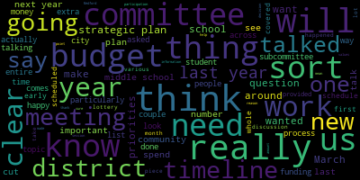
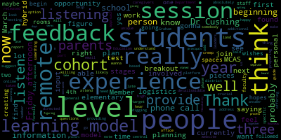

AI-generated transcript of Regular School Committee Meeting
English | español | português | 中国人 | kreyol ayisyen | tiếng việt | ខ្មែរ | русский | عربي | 한국인
Back to all transcripts
[Lungo-Koehn]: It's 5.05, Medford School Committee, February 8th, 2020, remote meeting by Zoom, pursuant to Governor Baker's March 12th, 2020 order, suspending certain provisions of the open meeting law, Chapter 30A, Section 18, and the Governor's March 15th, 2020 order, imposing strict limitations on the number of people that may gather in one place. This meeting in the Medford School Committee will be conducted via remote participation to the greatest extent possible. Specific information in the general guidelines for remote participation by members of the public and or parties with the right and a requirement to attend this meeting can be found on the city of Medford website at www.medfordma.org. For this meeting, members of the public who wish to listen or watch the meeting may do so by accessing the meeting link contained herein. No in-person attendance of members of the public will be permitted, but every effort will be made to ensure that the public can adequately access the proceedings in real time via technological means. In the event that we are unable to do so, despite best efforts, we will post on the City of Medford or Medford Community Media websites an audio or video recording, transcript, or other comprehensive record of proceedings as soon as possible after the meeting. The meeting can be viewed through Medford Community Media on Comcast Channel 22 and Verizon Channel 43 at 6 p.m. The meeting of the Medford School Committee, virtual information, 5 p.m. Since the meeting will be held remotely, participants can log in or call in by using the following link or call-in number. One of the numbers is 1301-715-8592. Enter meeting ID 940-7652-8040 when prompted. Additionally, questions or comments can be submitted. during the meeting by emailing medfordsc at medford.k12.ma.us. Those submitting must include the following information, your first and last name, your method street address, your question or comment. Member McLaughlin, will you please call the roll?
[McLaughlin]: Yes. Member Kreatz? Here. Member Graham? Here. Member McLaughlin, present. Member Mustone?
[Hurtubise]: Here.
[McLaughlin]: Member Ruseau? Present. Member Van der Kloot? Present. Mayor Lungo-Koehn.
[Lungo-Koehn]: Present, seven present, zero absent. We may all rise to salute the flag. I pledge allegiance to the flag of the United States of America, and to the republic for which it stands, one nation under God, indivisible, with liberty and justice for all. I know it was noted that between five and 6 p.m. will be negotiations and legal matters, executive session of the Medford School Committee pursuant to General Law 30A, Section 21A to discuss strategy and preparation for pending litigation and the basis that an open meeting may have a detrimental effect on the litigation position of the Medford School Committee. Specifically, the Medford School Committee will be discussing pending litigation before the Massachusetts Commission Against Discrimination. The Medford School Committee will reconvene in public session following the executive session. Is there a motion?
[McLaughlin]: Motion to move to executive committee.
[Lungo-Koehn]: Second. By Member McLaughlin, seconded by Member Ruseau. Roll call?
[McLaughlin]: Member Kreatz? Yes. Member Graham? Yes. Member McLaughlin, yes. Member Mustone?
[Mustone]: Yes.
[McLaughlin]: Member Ruseau? Yes. Member Van der Kloot?
[Lungo-Koehn]: Yes.
[McLaughlin]: Mayor Lungo-Koehn?
[Lungo-Koehn]: Yes. Seven in the affirmative, zero in the negative. Thank you for your patience, everybody, while we go into executive session. We have the regularly scheduled meeting for 6pm. I think we should just wait a few minutes till 6pm. So if anybody needs to take a couple minute break, we'll be start right at 6pm. Okay, good evening, everybody. It's six o'clock, we're gonna get going because we have a long agenda ahead of us. We are on number two, approval of minutes, January 25th, 2021 school committee meeting. Is there a motion to approve the minutes?
[Ruseau]: Motion to approve.
[Lungo-Koehn]: I actually have a question, sorry. Yes, member McLaughlin.
[McLaughlin]: Thank you, just bear with me one second, I'm just gonna find the minutes. Yeah, there was a, I think it was on page, let me see. It was around the discussion, I'm sorry, it was around the discussion of whether we actually got notification from the district about our students testing, whether they had tested or not, because we received their, and there was just some comments that I thought were missing there, which essentially, Toni Wray said yes, that we do receive that information, and that does act as a notification, unless I misunderstood.
[Lungo-Koehn]: Okay, so we'll just have that added to the minutes under that section.
[SPEAKER_12]: Please, and thank you.
[Lungo-Koehn]: So a motion for approval by Member Ruseau as amended by Member McLaughlin. Second. Seconded by Member McLaughlin. Roll call.
[McLaughlin]: Member Graham. Yes. Member Kreatz? Yes. Member McLaughlin? Yes. Member Mustone? Yes. Member Ruseau? Yes. Member Van der Kloot? Yes. Mayor Long-Gokarn?
[Lungo-Koehn]: Yes. Seven in the affirmative, zero in the negative. The minutes are approved. Number three, we have approval of bills, transfer of funds, and approval of payrolls. I don't... Do you have any update on that, Member McLaughlin?
[McLaughlin]: No, unless folks have questions on any of the bills. But no, just been going on Wednesdays at 9.15. And if there are any members who care to come by and see the process, I'm always happy to meet you.
[Lungo-Koehn]: Wonderful. Thank you very much. Number four, report of secretary. Number one is good of the order.
[McLaughlin]: That's me again, ma'am. Yeah, thank you. That was a request that we have for the first of the month as part of Robert's rules, best practice, just a good of the order, check in with the school committee members to essentially ask how they feel we're functioning as a team, if there's anything that they wanna bring forward or any concerns that anyone has or any positive things they wanna say about how we're functioning, but it's basically a self-assessment The first of the month. Okay, Miss Mayor member cuts has her hand raised.
[Kreatz]: Yes, member credits. I just wanted to share that what I've noticed over the last several subcommittee meetings is keeping to the timeframe that's on the agenda. And I just want to applaud school committee members, fellow school committee members for adhering to their schedule. And I want to try to make my meeting on time. I know I went like a couple of minutes over on my meeting. So it's something, cause we do value everybody's time. And I just wanted to congratulate all of you for doing a good job at that. Thank mayor. Mayor.
[Lungo-Koehn]: Yes, member of Goffman.
[McLaughlin]: All right. Thank you. Member cuts. Um, I appreciate that. Um, and also, um, I wanted to add, um, I know that we were doing the superintendent's evaluation. Um at the next meeting, and I would just ask that for the good of the order, it would be very helpful for school committee to have a self evaluation as well in a process for that. So I believe rules, policy and equity may have that as part of their function coming up or unless I'm mistaking, but I would like to put that forward to my colleagues as well, that we have a self-evaluation process for how we're doing and how we can improve and what our goals are for the year.
[Lungo-Koehn]: Okay, thank you, Member McLaughlin. Member Kreatz, was that just committee meetings or do I keep things timely as well?
[Kreatz]: Yes, no, no. Yep. All the meetings have been, you know, kept it like they haven't been going until the midnight hour. So I meant both. Sorry.
[Lungo-Koehn]: No, I'm just joking. I feel like you're jinxing me tonight.
[Kreatz]: I'm gonna knock on wood right now. Okay.
[Lungo-Koehn]: Anybody else have anything to point out for good of the order?
[McLaughlin]: So, Mayor, I guess I would ask that maybe, I don't know, do I need to put that in a motion for the good of the order, or can I put a motion out that, or we move that to subcommittee? I'm asking for advice from my colleagues regarding this matter.
[Lungo-Koehn]: The self-evaluation process?
[McLaughlin]: For the school committee, yes.
[Lungo-Koehn]: I think you could do, Member Graham?
[Graham]: I just want to remind everyone that before everything changed super dramatically, this was a committee of the whole that we had agreed to schedule. So we talked at the very beginning of last year about the importance of having goals that we want to work toward as a committee and particularly around our procedures and how things are working. And I think we've done some of those things sort of inherently as we've gone, like the scheduling of the subcommittees out for the year, I think was like a really important thing that we have done this year. And it seemed maybe like too structured at the beginning, but I think it has actually worked well to keep all of the priorities of our committees on task. And so I would just say that I don't know that we need a motion because it was already on our like to be scheduled agenda. But if we do need a motion, I'm happy to be a second.
[McLaughlin]: Thank you. I guess I just like to have some regular schedule. So let me just say, I make a motion that we have a self-evaluation process for the school committee where we set goals and we also offer a self-evaluation of our achievement of the goals on a annual basis, similar to the superintendent's self-evaluation and goals.
[Lungo-Koehn]: And the motion is to do that in a committee of the whole meeting? Sure. OK, motion for approval by Member McLaughlin, seconded by Member Graham. Roll call.
[McLaughlin]: Member Graham? Yes. Member Kreatz? Yes. Member McLaughlin, yes. Member Mustone?
[Mustone]: Yes.
[McLaughlin]: Member Ruseau? Yes. Member Van der Kloot? Yes. Mayor Lungo-Koehn?
[Lungo-Koehn]: Yes. 7 the affirmative, 0 the negative. The motion has been approved.
[McLaughlin]: Thank you.
[Lungo-Koehn]: Next up, we have report of committees. Number one, Committee of the Whole meeting, January 13th, 2021. Is there a motion for approval of those minutes? Motion to approve. And member Kreatz, seconded by? Rhonda Kloot. Member Rhonda Kloot, roll call.
[McLaughlin]: Member Graham. Yes. Member Kreatz? Yes. Member McLaughlin? Yes. Member Mustone?
[Mustone]: Yes.
[McLaughlin]: Member Ruseau? Yes. Member Van der Kloot?
[Lungo-Koehn]: Yes.
[McLaughlin]: Mayor Long-Klein?
[Lungo-Koehn]: Yes. Seven in the affirmative, zero in the negative. The minutes are approved. Number two is Committee of the Whole meeting January 25, 2021, which was, I believe, the superintendent's eval. Is there a motion for approval of those minutes? Motion to approve. by Member McLaughlin, seconded by Member Kreatz, roll call, and Member Van der Kloot, roll call.
[McLaughlin]: I'm sorry, Member Kreatz? Yes. Member McLaughlin, yes. Member Mustone?
[Mustone]: Yes.
[McLaughlin]: Member Ruseau? Yes. Member Van der Kloot? Yes. Mayor Lungo-Koehn?
[Lungo-Koehn]: Yes. Seven in the affirmative, zero in the negative. Minutes are approved. Number three, we have communication strategy and stakeholder engagement, February 2nd, 2021. Member Graham, chair, approval of minutes.
[Graham]: We met last week and we actually covered two topics because our January meeting was canceled. So we first covered the topic of the district-wide strategic plan. So if you remember in Like early March of last year, the superintendent provided us a draft of the high level of the district-wide strategic plan that the administrators had been working on for some time. And we talked extensively in our meeting about how to pick up that work and how we wanted to see it proceed forward, particularly in light of the fact that there's so much going on across the district and continues to be with the pandemic, but that this is important work and we didn't want it to delay unnecessarily. And so we really wanted, we sort of were all in agreement that we wanted to see this move forward. So we hashed out sort of a rough timeline and schedule that I think is important for people to know. At our March meeting, we will actually create a plan for a round table discussion and a survey to be executed in the month of April. And that will be our opportunity to hear from the community about the substance and detail of our strategic plan. So at our scheduled subcommittee meeting in March, will hash through the plan for a roundtable and a resulting survey. We'll execute both of those in April. In May, that will be sort of the time where the administrators take all that feedback and revisit and revise based on really all the things that have changed across the original draft of the strategic plan. And then the sort of the final piece being in June, we would all meet to talk about if this is our strategic plan and this is our revised state, what does the timeline of various activities look like so that we can measure progress against that timeline? So the schedule that we laid out will by June give us not just a strategic plan that consolidates all of the activity going on across the district, across a lot of different topics, but it will also have allowed us to collect community input, which we have not done so far as it relates to the strategic plan. And it will also allow us to create a timeline of like the order of operation and importance of various activities because we can't do everything at once. So we really will need to think about what comes first, second, and third. And so that timeline piece is sort of the final piece. And I would anticipate that we would potentially work on that together in a committee of the whole. But I think once we get through the first couple of steps, we can revisit that. And then the other topic that we covered in our meeting was really around middle school orientation practices in a similar vein to what we had discussed with kindergarten orientation. And we talked about sort of a rough timeline which included that the lottery process and work will begin soon now that the quarter two has ended and that the administration is targeting early March to kick off that lottery process for our fifth grade team so that students know In March where where they will be going to middle school next year. We did talk about, you know, the options and the things we we like to do and want to do around the open houses and whether they can be held in person this year or not. We talked about the really great community building that happened at the annual cookout that started and was delayed this year, unfortunately. But we also talked about the info sessions that the superintendent has done these past few years that were really previously dedicated to the sort of, I'll say the mechanics of the lottery expanding to really talk about the transition to middle school in general. So much like our bridges to kindergarten, giving parents, particularly parents with new middle schoolers, a bridge to middle school. And our next scheduled meeting is on Monday, March 1st.
[McLaughlin]: Motion to approve.
[Lungo-Koehn]: Motion for approval. Motion for approval by member McLaughlin, seconded by member Van der Kloot. Roll call.
[McLaughlin]: Member Graham. Yes. Member Kreatz. Yes. Member McLaughlin, yes. Member Mustone. Yes. Member Ruseau. Yes. Member Van der Kloot.
[Lungo-Koehn]: Yes.
[McLaughlin]: Member Marilyn Guggenheim.
[Lungo-Koehn]: Yes. Seven in the affirmative, zero in the negative. Minutes are approved. Thank you, member Graham. Number four, special meeting, February 3rd, 2021. This was the memorandum of understanding that was passed. If we could have a motion for approval of those minutes. Motion to approve. Seconded by member Ruseau, seconded by member Kreatz. Roll call.
[McLaughlin]: Member Graham. Yes. Member Kreatz. Yes. Member McLaughlin, yes. Member Mustone.
[Mustone]: Yes.
[McLaughlin]: Member Ruseau. Yes, thank you. Member Van der Kloot.
[Van der Kloot]: Yes.
[McLaughlin]: Mayor Lungo-Koehn.
[Lungo-Koehn]: Yes, seven in the affirmative, zero in the negative. The minutes are approved. Number six, we have community participation. Public participation emails, questions, or comments can be submitted during the meeting by emailing medfordsc at medford.k12.ma.us. Those submitting must include the following information, your first and last name, your Medford Street address, your question or comment. It's my understanding we have a number of emails that have been arriving the last couple of days. Are there any member of Vandeclute that do not relate to any other topic on the agenda that we should read now?
[Van der Kloot]: Yes, there's one that, is separate from the rest. It's from Cynthia Kinnan. Cynthia lives at 156 George Street, and she has given me permission to paraphrase it and stick to main points. She writes, I want to express that I see a full return to in-person school or failing that a fully in-person option for all students next year as vital. As a parent and an economist, I've been following the research on the consequences of disrupted schooling for both children and parents, and I find them very concerning. While the evidence on the possibility of safe return to school from a public health perspective is quite promising. Columbus, where my son is in kindergarten and has done a terrific job under extremely tough circumstances, as has the district as a whole. The weekly COVID testing program is wonderful. Nonetheless, hybrid rather than fully in-person school has been very challenging for our family. Of course, teacher and student safety is paramount for the return to fully in-person school next fall. I would appreciate guidance from the school district on what I and other parents can do now and going forward to help ensure the conditions are in place for a full return to in-person school in the fall. I hope that by furthering this conversation now, we can make sure that there is time to get the necessary funding and resources in place for next fall. Mayor, there are also many letters pertaining to the Columbus School discussion, which is later on in our agenda. So perhaps we should save them to that point.
[Lungo-Koehn]: Yeah, I do know we have CCSR students that I think have to leave at seven. So I think that might be best since it is an agenda item. And we should move through the reports of the superintendent fairly quickly. Thank you, member Van der Kloot. And I think we discussed this return to school regarding that email at the last meeting when we talked about goals for the superintendent. And I know as one parent and school committee member, I really hope we are fully back come September. I don't know if Dr. Edouard-Vincent would like to respond as well.
[Edouard-Vincent]: Yes, I definitely am a proponent. The good news is that the vaccine is here. Teachers will, we fall into phase two. So it's a matter of sometime between February and March. That's our hope that we will be able to have everyone vaccinated as soon as the vaccines are available. And for next school year, there will be a brief presentation a little later by Dr. Cushing and Ms. Galussi about listening sessions. So that's part of the agenda for today, this evening as well. But we will definitely be working collaboratively in support of getting all our kids back in school for next year. Thank you.
[Lungo-Koehn]: Thank you, Dr. Edward-Vincent. Next up, we have report of superintendent, number one superintendent's updates and comments. Dr. Edward-Vincent.
[Edouard-Vincent]: Thank you. Good evening, everyone. To open today's remarks, I just want to share that today was indeed a tough day for Mustang Nation. As we said goodbye to our colleague, Mr. Frank D'Alessio, the computer technician for the school district. So with the arrival of COVID-19, we have had to adapt ourselves to new restrictions and safety protocols. But the loss of life from this virus is still very hard to process. Frank was a husband, father, and grandfather who loved annually to take his whole family to Disney World. He would often pick up his granddaughters when they attended Kids' Corner at Medford High School. He had a smile for everyone and always was at the ready when something with our computers or printers just didn't work. His loss has been felt throughout the entire district. We extend our sincerest sympathies to his family and friends during this very difficult time. I also wanna share that last week, we began a new form of COVID testing. It's pooled or group testing. This testing has been made possible with a partnership between the city of Medford and Tufts University. We did have a few weeks back, we were recognized and spoke by DESE about this cutting edge public health measures that we are using to keep schools safe and students in school. By moving to pooled testing, it will ensure its sustainability as well as being more effective and efficient to identify and isolate cases of COVID and reduce transmission. Testing now takes place on Mondays and Thursdays for our students, and those with a positive pool will receive follow-up tests in school the following day. So I just wanted to alert the entire community of that slight shift. Tomorrow, February 9th, COVID-19 information will be provided to our multilingual families by Toni Wray, our director of health services and EL director, Paul Texara. They will be available to answer questions about COVID-19 in Medford and the new COVID pool testing in our schools. It is tomorrow by Zoom at 6 p.m. with Portuguese, Haitian Creole translators on at 6 p.m. and at 6 30 p.m. we will have Arabic and Spanish translators so again it's split into two sessions 6 p.m. Portuguese and Haitian Creole 6 30 p.m. Arabic and Spanish translation is available. The Zoom link is available on our school blog and all principals have it as well. We hope you will join that call. As I mentioned in my Friday message, that because meals have been free for all students this year, many families have not yet applied for free and reduced lunch. Those who qualify for free and reduced lunch may also be eligible for the pandemic food assistance. That's P-E-B-T. So with that status, to get enrolled, all you need to do is complete the free and reduced lunch application and return the form to the school office. Translated versions are available on our website this program is open to both hybrid and remote families. And so I wanna stress that because I know some families may think, well, my kids are not going to school. I'm not entitled, but you are entitled and I just do not want you to miss this opportunity. So please take advantage of that. I would also like to mention that our YMCA's Mystic Community Market also has food items available to support the community. The hours are Monday to Friday, 3.30 p.m. to 7.30 p.m. and Saturdays from 9 a.m. to 2 p.m. Reservations for pickup are required. I also wanted to say that the Lunar New Year the Chinese New Year or Spring Festival is going to be celebrated this coming Friday. It has more than 4,000 years of history and it begins on February 12th and ends February 26th with the Lantern Festival. It celebrates family reunions and features ancient spiritual traditions. 2021 is the year of the ox. Those born in the year of the ox often exhibit the positive characteristics of being hardworking and honest. We wish all of our Chinese neighbors and Asian members of our community and all that celebrate the Lunar New Year, good health and much happiness in the new year. February is also Black History Month. And I would like to extend a special thank you to Ms. Charose Walker. The high school has been celebrating this month. In particular, we've been having an ethno Haitian dance performances by the esteemed co-founder and director of the Jean Apollon Expressions, J-A-E. Mr. Jean Apollon, he's a successful choreographer and master teacher based in Boston and Port-au-Prince, Haiti. He teaches our students various Haitian folkloric dances, their meanings and origins. Miss Walker has extended email invitations to the entire school committee as well. And the sessions are taking place with students being socially distance and keeping an appropriate physical distance. The sessions are being videotaped because we were not able to live simulcast it to our students that are fully remote. We have some of our vocational students taping it and they're going to edit these videos and make it available for everyone to be able to see and participate. I also wanted to just take a moment to say that, um, A week from tomorrow, or a week from yesterday, next Sunday is Valentine's Day. And one of the things that we normally do if you recall a year ago, we were celebrating with Medford family network at the McGlynn school. participating in the Valentine fundraiser. As a result of COVID, we really were not able to do that this year. However, the friends of the Medford Family Network, they held an online fundraiser called Valentine's Love. And during that fundraiser, they were able to raise significant funds. But it is our hope that we will be able to return to scooping ice cream next year at the Valentine fundraiser. So Medford Family Network, thank you for all you do on behalf of the community. As you know, we have our wonderful CCSR students. There will be a presentation by them today as well. But as you know, CCSR, they're always busy. and up to something very good. Our middle school students are collecting donations to put together senior citizen gift bags. Some of our seniors are really struggling without being able to meet friends at Medford's Senior Center. Therefore, CCSR is hoping donations of the following will help seniors feel less alone. Warm hats, gloves, puzzles, boxes of hot chocolate and tea, crossword puzzles, hand sanitizer, masks and books. Donations can be left at the McGlynn Middle School. Again, it's a great opportunity to help our community and support our senior citizens. Also, CCSR is hosting a winter clothing drive at Medford High School to benefit our Hope Chest. They are looking for donations of new or gently used warm hats, snow pants, gloves, boots, winter jackets, socks, and Mustang gear. A donation box is located in the front lobby of the high school. I also wanna recognize the Andrews Middle School National Junior Honor Society. They are hosting a blanket drive. New and gently used donated blankets can be brought to the Andrews Middle School and will be donated to a homeless shelter in our community and an animal shelter as well. Lastly, a few reminders. If you had the opportunity to watch the Super Bowl last night, Ms. Amanda Gorman once again inspired all of us by honoring frontline workers and educators in her poem, Before the Coin Toss. Poems for the Mustang Poetry Contest are still being accepted until February 22nd. I encourage both our remote and hybrid students to send along their poems. And I also want to acknowledge that member McLaughlin spoke and asked about some of our English learner students who may not yet be fluent in English. And so I assured her that, yes, if the poem is written in a student's native language, we will have it translated. and we will take that into consideration. And for some of our students with disabilities that may not be able to write, we will accept assistive technology devices and illustrations all on the theme of unity. So we wanna be inclusive. This poetry conference is for, this poetry contest is for everyone, pre-K to 12. Anyone who wants to participate can participate. and we welcome you all. Our next Building Bridges to Kindergarten is going to be held on Wednesday, February 24th from 11 a.m. to noon, so this building bridges to kindergarten session is in the middle of the school day, so parents who are out there, if you can mark that and take it as your lunch break, 11 a.m. to noon, again, welcoming new kindergartners for next school year.
[Van der Kloot]: What's the date?
[Edouard-Vincent]: Wednesday, February 24th, from 11 a.m. to noon, one hour, early lunch that day. Our last update is that February vacation begins next week, Monday, February 15th until Friday, February 19th. For parents who are looking for some options for their children during the vacation, please go to Medford's recreation site on the city website. Additionally, the Medford Library is offering a creative writing workshop for students in grades six through 12. Our secondary students have an opportunity to participate in creative writing with Medford Library. I hope all of our Medford students and families enjoy this break. Thank you.
[Lungo-Koehn]: Thank you, Dr. Edward-Vincent. Number two, we have a COVID-19 public health update and Medford Public School COVID-19 testing summary and update by nurse supervisor, Ms. Toni Ray. Marianne O'Connor, I don't know if she's on, our board of health director and Mr. David Murphy. Ms. Ray.
[Wray]: Okay, good evening, everyone. Thank you for joining us and welcoming me. I'm happy to report that in this week's February 4th report from the Department of Public Health, Medford moved to the yellow zone for COVID activity with a decrease in our percent positivity rate to 2.06%. The state is trending downwards as well, and that's reflected in both our city data and our school data. Last week on Thursday, we made the transition to pooled testing. Last Thursday and then this Monday were our first two days of pooled testing, and the testing process overall went well. There were a few little scheduling difficulties that we examined and made changes for today, and we were pleased that today moved along smoothly at all the schools. Last Thursday, we did 133 pooled tests. We had one positive pool that required follow-up. All participants in that pool were contacted and follow-up testing was done on Saturday at Medford High School using a rapid screening as well as an individual PCR test. Okay, so the other word I'd like to mention is about upcoming vacation. We wanna stress to people that anyone who plans to travel must follow the travel restrictions as outlined by Governor Baker and try to limit your travel and limit group gatherings. We ask that you continue to wear your mask and maintain the six feet social distancing. If you are traveling, you need to receive a PCR test within 72 hours of re-entering the state, and you must quarantine until you get the results of that PCR test. Any school students are advised to present their results to the school nurse prior to return to school. If you need to check the requirements, it would be at mass.gov slash COVID-19 travel restrictions. And I think Dave Murphy might be following me with some more information about the testing. Thank you, Ms. Ray.
[Lungo-Koehn]: Mr. Murphy, anything to add?
[Murphy]: Very quickly, Mayor, as Miss Ray said, we've made the transition to pool testing. There were a couple of communications that went out from the superintendent last week, aimed at both families and the staff, explaining some of the implications of those changes. As was stated in those communications, for the vast majority of participants, provided our positivity rate continues to stay at the rates that it is now, hopefully declines even further. testing looks pretty much the same as it always has. The biggest, the most noticeable change for most people in the Metro Public Schools participating in our testing program is the day of the week and the time at which they're testing. That variable with regard to the time of day is a significant one. And it is, Ms. Ray alluded to a couple of scheduling hiccups. And while The statement that everything went well in school today was correct. In fact, it went very well and that's due in large measure to Ms. Ray's staff and the team of school nurses and other staff members who are helping to make this program a success. There was a hiccup with the transition from the testing samples to the lab. And so I anticipate that for the second time, we'll be doing the reflex testing on what we consider to be the off day of testing. So in this case, it will be Wednesday. As is the last case, it was it was Saturday. And as folks may have noticed by the time of the email on Friday night, we didn't have up 133 pools. We had 132 of them back, but number 133 took a few hours to come in. And as a result, we didn't give an all clear until around eight o'clock on Friday night. So I don't think it'll be eight o'clock tomorrow night, but We probably will be utilizing our Wednesday testing station, which as we stated in the communication is open from 1pm until 4pm at Medford High School. That testing station is primarily geared toward central office personnel, student athletes and extracurricular program participants in cohort D, so that students who are otherwise fully remote but participating in extracurricular activities in person, the expectation is that they are testing between 1 p.m. and 4 p.m. at the high school in the West Courtyard Lobby, and that will also be the time block this week in which we'll do the reflex testing, assuming there's any positive pools. So if there are no positive pools, then we won't be doing any reflex testing, and that would certainly be certainly be good news. So, um, that's essentially where we're where we're at in terms of the pool testing. We had said when we made this transition that there would be some bumps and hiccups. Um, that's that has been the case, but nothing that is insurmountable. And, uh, we think we look forward to continuing to execute this program in the coming weeks and months.
[Lungo-Koehn]: Thank you, Mr. Murphy.
[Ruseau]: Remember Ruseau? Thank you for the report. I'm very happy with the pool testing. I did email I think all of you back after you sent the plan out to us. It was comprehensive and really closed a lot of the loopholes I think that we had expressed concerns about when you first presented that to us. With the pool testing, my understanding is more districts are joining in on pool testing. And do we have any affirmative promises that the capacity of the people that are actually taking the pool and doing the testing, that they can handle a ramping up of other districts joining in. I just would hate for us to have gotten this done real smooth and then two more districts get in and then suddenly we have to wait a whole extra day and all our plans fall apart.
[Murphy]: May I just respond to that?
[Lungo-Koehn]: Yes, Member Murphy. Mr. Murphy.
[Murphy]: That would be an honor. I think in terms of confirmation of the Broad Institute's capacity, what I would say is that because we've been involved in many of the conversations with DESE as they've developed this program, we've been able to get a little bit of an insider's view as to the vetting process that DESE is subjecting potential vendors to. And I would say I have a high degree of confidence that that vetting process is ensuring that all of the various entities that are involved in the administration of the testing programs, in fact, have the capacity and effectiveness to do so in a reliable way. That said, there are a number of variables, some of which that are at times out of our control, that do trigger some sort of pressure points that make the smoothness of the program a bit of a challenge. In this instance, the one that we've experienced both last week and this week, it's making sure, again, we pride ourselves on not disrupting the instructional day, and we need to maintain that, not minimize instructional disruption, but also get the testing done in a very, very efficient fashion, such that the samples arrive at the lab and can be turned around. So I haven't seen any issues with regard to the labs capacity. And we are doing our best to demonstrate the capacity necessary to be very efficient in the testing program without turning the entire school day into the day at which you go to test and if you can get some learning in while you're there, that's great. So that's sort of where the challenges are. It's a little bit, it's a shared challenge and something that we have to continue to iron out some details on.
[Ruseau]: Thank you.
[Lungo-Koehn]: Thank you. Next up, we have report on CCSR, Mr. Richard Trotter, Michael Skorka, and student representatives. Welcome. Just unmuted you, Mr. Skorka.
[Skorka]: Yes, I'm here. I think Mr. Trotter is in the room as well.
[Lungo-Koehn]: Yep, looking. Dr. Cushing, do you see?
[Skorka]: I think he might be under iPad. That helps.
[Cushing]: I've made Ms. Olson and Mr. Skorka co-hosts as well. And just let us know the students who would like to speak and we can do similarly or just unmute.
[Skorka]: I could start if Mr. Trotta, Mr. Trotta, could you please unmute and begin? And if not, I'll start.
[Lungo-Koehn]: Mr. Skorka, do you know if it's iPad two or iPad three? No idea, right?
[Skorka]: I have no idea, I'm sorry.
[Trotter]: I'm here, can you hear me now?
[Skorka]: Yes, we hear you.
[Trotter]: Oh, okay. I'm iPad three, all right. Well, first of all, thank you for allowing us to give this report. I want to thank the school committee for being there behind the scenes and supporting us and the kids. I also wanna thank the superintendent who's been an outstanding contributor and supporter. With her support, we have been able to expand the program dramatically over the last three years. So tonight there will be a report by the students and Michael, I'm just giving a quick brief introduction. I just wanna remind you of our mission. which is to develop student leaders who work to make the world a better place. And so that covers a lot of territory, particularly in this acrimony that has existed for the last few years. We believe this program is vital to the future of our country in a sense of developing positive role models and leaders that will help lead us in the future. I wanna thank our founders, Bloomberg Foundation, who gave us the first grant and then the Cummings Foundation, and now thankfully, the Crystal Campbell Betterment Project has now given us life for next year and this year. So we're in good shape financially for this year and next year. We have changed the format because of the COVID, and Michael's gonna talk about that. So in closing, I want to, once again, thank you all. Oh, I also want to thank Dr. Cushing for being my direct contact. We're working together and we're looking to do some great things beyond just CCSF and getting more into SEL as well. So with that, I'd like to introduce Michael, but I want to thank also Megan Olson and Ivy Carabucci, who are both working as advisors as well. Megan's done a fantastic job at the middle school level and Ivy's helping Michael And of course, we all know Michael. Michael is a superstar. Life support for our students. And he does a fantastic job. So I just want to pass it on to Michael. And once again, thank you for allowing us to give this report.
[Skorka]: Thanks so much, Rich. I really appreciate those kind words. And we're very excited and really honored that you're having us on tonight. I even wore my special bow tie for tonight. So we'll get started with that. So the CCSR is having a very successful year, even during this pandemic. And at the high school, there are over 100 active CCSR student leaders. And at the middle school, there are approximately 30 to 50 active CCSR student leaders. We're very proud of that. It keeps getting bigger and bigger. In terms of projects at the high school, students are working on or have completed a total of 50 projects. And as Rich said, the model's been a little different this year. Students are tending to choose large-scale projects, whereas before they were doing projects in groups, that's still happening. It's sort of shifted into these large-scale projects and overall, like I said, we have been working on or completed a total of 50 projects. We expect that number to go up, of course, as the year continues. Some of these projects include painting a social justice mural in the city, which we're working on, stocking the CCSR micro pantry located at Tufts Park, running a school supply drive, organizing a Medford Rock painting scavenger hunt, and pushing to decrease the amount of plastic cutlery given to customers with their takeout orders. A big shout out to my co-advisor, Ivy Carnabucci, who helps me advise these students toward the successful completion of these projects every single day. Thank you so much, Ivy. At the middle schools, students have been extremely busy as well. Some key middle school projects include filling up the Free Little Libraries in Medford with age-appropriate books, creating gift bags for our senior citizens, as the superintendent mentioned, and organizing and executing our third annual Mustang Way Assembly, where high school students spoke to sixth graders about the importance of being kind to one another and to encourage one another to implement the Mustang way in their daily lives. Also a big shout out goes to Megan Olson, who is the CCSR advisor at the middle schools and helps to oversee all of those wonderful projects that I just mentioned. I'm also happy to report that we will soon be hiring another CCSR co-advisor at the middle schools. We encourage all of you to check out all of these projects and our announcements on the CCSR social media pages and website, which are run by our student leaders, specifically Emma Maganzini, Christina Zhang, Erin Tan, Lisa Lopes, and our webmaster, Dan Khoi Nguyen. You can find more information about the CCSR on our Facebook at the CCSR, on our Instagram at MedfordCCSR, on our Twitter page at MedfordCCSR, and of course on our website at MedfordCCSR.org. Finally, the portfolio that you received before today's meeting was created by our student portfolio managers, Laurel Baxter and Ava Heineck. The CCSR works as a team, and I consider us to be one big family, and we will continue to make the world a better place one student at a time, which is our motto. Now, let's hear from some of these students. First up, I'd like to introduce middle school CCSR student leader, Kaitlyn Alves. Kaitlyn, you're up.
[SPEAKER_01]: Hi, I'm Kaitlin Alves, a seventh grader at the McGlynn. And I've completed a handful of CCS projects, including putting together bags for the senior center, which I'm currently working on doing again. We're collecting items like hot chocolate, tea, mittens, and hats. Over the summer, I was fortunate enough to see the smiles these bags brought to the faces of the senior citizens. I've also done a bake sale at the running of the Leprechauns Road Race for Boston Children's Hospital twice. when I was in elementary school. I was fortunate to catch the attention of the news with the lookup challenge, where we challenged students, teachers, and parents to take a break from technology. I really enjoyed doing all these things with the CCSR because it gave me an opportunity to make a difference in my community, and I got to work with so many amazing people while doing it. Next, I'd like to introduce high school CCSR member Sarah Lima.
[SPEAKER_12]: Hi everyone, my name is Sarah Lima, I'm a senior at the high school. I wanted to talk about a little bit why I joined CCSR. I had Mr. Skorka as a freshman. He was a great teacher and he was always so passionate about his work and I was always so passionate about helping other people so I always had these ideas and I talked to Mr. Skorka about my ideas and he told me about the CCSR and it got me interested. I am also a very shy person so I don't communicate a lot so CCSR helped me a lot with meeting new people and it really helped me with my ideas and it brought my ideas into reality. This year we are making masks for local shelters since the pandemic is really bad lately and everything. We are planning on making 200 masks. We have made 50 right now with the help of our mayor. Thank you for donating the elastics. I wanted to show one of the masks we made. This is just to show an example. Yeah, and we are planning on making logos to put on the masks that says CCSR. Sorry, guys. Yeah, that's it. Thank you. Now for Samuel Klugisch.
[Lungo-Koehn]: Wonderful.
[SPEAKER_12]: Mr. Klugisch?
[Lungo-Koehn]: Let me see if I can unmute you. You should be good now, Sam.
[SPEAKER_17]: Thank you. Yep. Thank you, Sarah for that very wonderful introduction. So my name is Samuel cluggish and I am a senior at Medford High School. I've been a part of the CCSR since my sophomore year. Tonight, I want to talk briefly about my project for this year, which was to launch the CCSR's first podcast segment with Sam, which I hope most of you have had a chance to listen to. And if not, you can check it out on the CCSR's website. So the monthly podcast is a chance to share not only with the school, but the broader Bedford community about various projects and events happening in the CCSR. And we also like to explore various themes such as gratitude and good deeds. The podcast is important because we can reach new audiences to talk about our work and to share ideas. We hope that new students will be inspired to join and new funders will be inspired to support us as well. During the rest of the year, we're looking to build on our initial success with the podcast and hopefully include some interviews and explore different topics. If any of you have any specific ideas you would like to see us address, please feel free to let me or Mr. Skorka know. For me personally, I'm honestly very grateful for all the skills that I'm learning on this project, because I know that podcasts and social media are critical tools to communicate ideas to broad audiences. And I know that I'll be able to use these skills in college and beyond. So thank you to Mr. Skorka, Mr. Trotta, and the CCSR community. And lastly, the CCSR would once again like to thank the Crystal Camp Community Betterment Project and the Cummings Foundation for their continued support. And that concludes our presentations for tonight. Thank you so much for your time. And are there any questions?
[Lungo-Koehn]: Thank you so much, Sam. Yes, we have questions. Member Van der Klooth and Member McLaughlin? Unmute.
[Van der Kloot]: There we go. I just want to mention how wonderful it was to have the opportunity to join in the middle school assembly this past week. Frankly, you know, as a school committee member, one of the great joys is to be able to see our students in action and when we've been all On Zoom, that's been harder to do. So bringing us this assembly, getting to see our kids and a lot of them, it was just great. So thank you and thanks to all the students and of course to their leadership, Mr. Skorka, Ms. Olson, Mr. Trotta and everybody else who's involved. It's something that makes us feel very proud.
[Lungo-Koehn]: Thank you, member Van der Kloot. Yes, the assembly was very impressive. Member McLaughlin and then member Kreatz.
[McLaughlin]: Thank you. I just wanted to say, I feel like the CCSR is a real jewel in Medford's crown. It's something that we should all truly be proud of. It has taught so much about kindness and gratitude as Sam was saying a little while ago. And I think our community as a whole could learn a lot from the CCSR, especially in these days. And I wanna thank Rich Trotta and Michael Skorka and the foundations for contributing and also Rich very interested in hearing more about CCSR's work in the social-emotional realm, which is also a much needed aspect in our district and in our community. So thank you all so much. And to the students who presented tonight, I know it can be really intimidating presenting on Zoom, and just wanted to say that you guys all did a great job. Thank you so much.
[Lungo-Koehn]: Absolutely. Thank you, Member McLaughlin. Member Kreatz?
[Kreatz]: I just want to say thank you to all the students for your presentation tonight. They were all incredible. And I just want to mention that each and every project is so extraordinary. All your projects are making a huge difference in so many people's lives. It's incredible. And just to hear how creative these projects are and The students are so excited about their projects and they're so involved in them. It's just, it's wonderful. And I just can't thank them enough. And I wanna thank Megan Olson, Michael Skorka, Rich Trotter and the foundation also for their support with the funding and just thank you. And I did get to jump on the call last week and I got to hear some of the presentations during the live call last week and it was incredible also. Thank you all.
[Lungo-Koehn]: Thank you, Member Kreatz. Yeah, I just want to echo the sentiments, Mr. Skorka, Ms. Olson, Mr. Trotter, I know Dr. Edouard-Vincent and her team, everybody so supportive of CCSR and the Cummings Foundation, which I advocate for funding to CCSR and they've been a great, they've been able to keep the program up and running and surviving. And the projects you do are amazing. Mr. Squawker, you get the kids to not only do projects and love it. And I think it was 180 students you had last year, which I think is amazing at the high school, but you have them emailing the mayor's office for help all the time and really taking that initiative. And I agree, it helps them build confidence. and you can see it, whether that was on the assembly or here tonight, and we're just so proud of all the students and all those working very hard on their behalf. So thank you. Thank you.
[McLaughlin]: Mayor, it looks like people have their hand raised. I don't know if it's regards to CCSR. Oh, great. Amy?
[SPEAKER_19]: Hi, I just wanted to check in and ask the team that's making the masks. I just want to check in and ask if they have all the supplies they need. And if they don't wear, how could people bring you extra fabric or elastics? You know, do you need anything? And how can we get it to you? That's it.
[SPEAKER_12]: Yes, Sarah, did you do you need more fabric or? actually um i finished my fabric because i did make the 50 masks on monday but i am planning on buying more we didn't spend much money but thank you so much for asking but we're okay thank you so much Thank you, Amy.
[Lungo-Koehn]: And I'm sure Mr. Skorka, you could get in touch with Ms. Skorka at medford.k12.ma.us if you want to reach out to him, Amy, to see if any of the other students need any more material. and I got extra elastic, so I think they're good with it.
[Skorka]: Mayor, could I just say one thing?
[Lungo-Koehn]: Yes.
[Skorka]: There may be, so Amy, there may, we may need, there may be another group, you know, if we do have the materials that would want to step up and do that. So if you would like to donate, maybe Sarah's group, if they finish, cause their goal is 200. So if they finish 200 before the school is over, we may be able to use that either now or sometime in the summer. So feel free to email me and thank you so much for that. That was really wonderful.
[Lungo-Koehn]: Great. Thank you all. Next up, we have number four report on Massachusetts School Library Association, MSLA, Superintendent Edouard-Vincent. We have Maria Dorsey, Teacher Librarian at Medford Public Schools. I'm not sure if this is under the same category. Has been chosen to serve as Metro West Area Co-Director of the 2020-2021 Executive Board of the Massachusetts School Library Association. The Massachusetts School Library Association congratulates Christina Johnson, library teacher at the Andrews Middle School as a recipient of the President's Award. This award honors school librarians making an impact on student learning in their early careers. We hope you will join us as we celebrate Christina's successes in our online celebratory campaign running February 22nd to March 12th on Twitter and Facebook. Christina will be honored at the Massachusetts School Library Association annual conference on March 21st and 22nd. Dr. Edouard-Vincent.
[Edouard-Vincent]: Yes, so again this, this report and update is really just to congratulate. Once again, the both of them for their wonderful lead leadership Maria Dorsey who we know is our librarian at the high school. This is actually her third year. And so we just want to congratulate her. We did recognize her last year when she received the award of super librarian. And that was in February of 2020, a year ago, but Maria Dorsey is doing wonderful work at the high school. And this is her third year serving in the role, but it's still an honor. And we want to just congratulate her for being part of the executive board. And again, had we been meeting in person, we would have been able to take a picture and clap with her. She actually had a public library director meeting today. So she's not able to be on this call this evening. And also for Christina Johnson, I just wanted to share a little bit of background about her story in terms of the context that Chris was a parent volunteer at the Brooks Elementary School when the 2008 recession resulted in budget cuts and the K-8 libraries closed. Then they reopened first with parent volunteers and then paraprofessionals under the guidance of the remaining 1.5 librarians, Holly Lannan and Maria Dorsey. Chris was transitioning from a business position and became a library para, which resulted in working towards her library teacher certification from Salem State. her impact was immediate. Reopening the Andrews Middle School Library and establishing programs at both Andrews and McGlynn Middle Schools, where she applied for grants to fund after-school science enrichment, as well as a close association with the Medford Public Library. In addition to both middle schools, Chris also manages the McGlynn Elementary School and the Columbus Elementary, along with a staff of paraprofessionals. So I just wanted to recognize this wonderful accomplishment for Medford's own Christina Johnson, and I'm just really happy that she's receiving this President's Award. I am not sure if Christina is on the call, but I just wanted to acknowledge her wonderful accomplishments to the committee and let you know that wonderful things are happening in Medford. I'm not sure if we see a raised hand.
[Lungo-Koehn]: Yes, I see Christina Johnson on the call, not raising her hand though, but I can unmute her. Christina, are you able to say hello?
[SPEAKER_21]: I am. Can you hear me? Wonderful.
[Lungo-Koehn]: Yes, we just send you to do. Congratulations.
[SPEAKER_21]: All right. Well, thank you very much for recognizing me this evening. I really appreciate it. It was a totally unexpected award, but it gives me a lot of honor to also be recognized with Maria Dorsey, who was my inspiration for becoming a library. And even though the award is for someone who's new in their library career, I'm actually consider myself old, but this is a second career for me. And Maria was my inspiration for becoming a librarian. And I just wanted to say thank you again for recognizing me tonight.
[Hurtubise]: Thank you for your service. Thank you.
[Lungo-Koehn]: Thank you so much. Number five, we have motion to approve donation of MacBook to a student. Dr. Peter Cushing, assistant superintendent.
[Cushing]: Good evening. So a community member reached out approximately a month ago to Ms. Schulman with a very, very generous donation of a MacBook 2018. um, device and we are presenting it. It is to be used for a student. Um, and we are asking you to accept this donation.
[McLaughlin]: Motion to approve.
[Lungo-Koehn]: Motion to approve by member McLaughlin, seconded by Member Graham. Is that you? Okay. Member Graham. Roll call.
[McLaughlin]: Uh, member Graham. Yes. Member Kreatz. Yes. Member McLaughlin, yes. Member Mustone.
[Hurtubise]: Yes.
[McLaughlin]: Member Ruseau. Yes. Member Van der Kloot.
[Lungo-Koehn]: Just unmute yourself, Member Van der Kloot, sorry.
[Van der Kloot]: Yes.
[McLaughlin]: Mayor Lungo-Koehn.
[Lungo-Koehn]: Yes, seven in the affirmative, zero in the negative. The motion passes. Thank you, Mr. Cushing.
[Cushing]: And just as the motion passed, I do wanna say publicly, and we'll send a thank you note to Ms. Deirdre Hosler for her generous donation to our students.
[Lungo-Koehn]: Absolutely, thank you. That's great. Number six, we have the fiscal year 22 budget overview and anticipated timeline. Mr. David Murphy, assistant superintendent of finance and operations. Mr. Murphy.
[Murphy]: Thank you, Mayor. Good evening again, members of the school committee. This next presentation, which I will keep brief in light of the fact that it is the first of many times we'll have a conversation, I suspect around the fiscal 22 budget, is in response to several questions that have come in from members of the committee looking to talk about the timeline and to be able to begin to establish expectations, both for the committee and members of the community as to what to expect in the coming weeks and months. So I do have a deck that I'm going to share. It's only seven slides, including the cover. So it, again, won't take us too long to walk through all of this. This particular presentation will be at a fairly high level and we'll walk through the components of the budget and some of the initial challenges that we are already know that we'll be confronting as we begin to develop our budgetary priorities and look forward to the adoption of the fiscal year 22 budget. So some of this again is background, but I know for some people watching school committee meetings, this isn't something that thankfully you have to think about or work with on a daily basis. So just for those who haven't tuned into the budget process since the last time the budget was developed, Um, the budget is comprised primarily of state and local funding with, um, those coming through the budget process that begins with the governor's state of the commonwealth address. It was just a couple of weeks ago when what is called the cherry sheet that goes to the legislature to help work through a complicated formula formula to determine the appropriations have made to municipalities across the state. That chapter 70 funding is the largest influx of core educational funding, and the formula dictates the amount that is allocated to each city and town within the Commonwealth. While that's happening at the state level, the city is developing its own budgetary priorities and examining its budgetary capacity, much of which is based on what that Chapter 70 allocation is that comes from the state, along with the unrestricted local aid. All of that goes into determining what the budget will be, what budget will be appropriated for the school department. And while that is happening at the city and state level, the school department is developing its budgetary priorities consistent with the district's strategic goals. Ultimately, the superintendent will make a recommendation after an internal vetting process and a process that will be outlined in a moment in a flowchart that will tweak consistent with the committee's feedback in order to make sure that we have a presence in our website and elsewhere. So members of the community who wanna follow along as we develop the budget and as it ultimately, as we move toward the beginning of the fiscal year on July 1st. And then the other, I can't really say it because of where the Zoom, how the Zoom is set up here, but the core budget is made up of the local contribution and the chapter 70 funding. what is often referred to in finance circles as the external funds. These are grants as well as some of the miscellaneous funding that comes in based on specific circumstances. The circumstances we're operating under now have to do with funding that has come in for fiscal year 2021 and anticipated through FY22 related to the COVID-19 pandemic, most of which is heavily restricted for use related to expenses that are connected to the pandemic. A little bit later in this meeting, I'll be presenting a summary as to money that we've expended in order to address some of the more pressing priorities that the district has needed to address due to the circumstances under which we are operating. But even putting all the COVID-19 context aside, these external funds flow in each fiscal year and replenish themselves on a year-to-year basis. are Medford Public Schools, like all public school districts in Massachusetts, is, I'm gonna say, heavily dependent, keeping in mind that this is still a relatively small fraction of the overall operating budget, but some of the important initiatives and parts of the district are funded through these grants, and so it's an important part of sort of seeing the entire budgetary picture. With regard to a timeline, and again, this is, I can see the, made his facial expression there, which tells me that we will be tweaking this a little bit before we get to the place where it is published. So the point of this flowchart is to make this clearer to the community as to the step-by-step process. I can tell you that the finance people that reviewed it thought it was very clear, but that might tell us more about finance people than it does about the value of the flowchart. And I'm including myself in that. I hope I haven't offended any members of my team. All budgets begin with the goals and visions that are established by the superintendent and the school committee. There is, as you might imagine, a significant portion of this that takes place internally and vetting the different priorities prior to being presented to the public through the personnel and budget subcommittee meetings. We anticipate a series of meetings and or hearings to help vet the budget and keep the community informed as the budgetary priorities continue to develop that leads to the superintendent's recommendations to the school committee and the what is the statutory obligation on the part of the school committee to hold a budget hearing and receive feedback that leads to the school committee request that goes to the municipal government and then follow following that but an appropriation to the school committee which is ultimately when the school committee adopts the fiscal year fiscal year 22 budget so The point of this is not so much that everyone can memorize the seven steps involved in the budget development process, as much as it is to convey the point that there's a fairly extended chronological process that will occur over the next several months as we lead toward fiscal year 22, all which each step sort of has a specific purpose. Sometimes it's to make sure that we're thoroughly vetting budgetary priorities and seeing how each of those budget priorities fit together to form the overall coherent picture of what the district is trying to accomplish and the context in which we're operating. And other steps are specifically to maintain a level of transparency so the members of the community can understand both where we are in the process and what the implications are going from the budget book to the classroom and other learning environments. So we're at a place now as we are on the cusp of fiscal year in which we already know that there are some red flags or warning signs ahead. They are not probably anything that is going to be terribly surprising to those who have followed the sort of economic evolutions of the pandemic, but the combination of decreasing revenue streams, some unfortunate timing that I can go into a little bit more detail about for those who have questions about the charter school reimbursement formula. and what that means for Medford. The third bullet point about steadily increasing fixed costs. This is again, something that every district deals with on a year to year basis where they're even before we get into any types of funding or developing additional priorities, there are some fixed costs that increase and grow over time. The chapter 70 projections, there's a very slight editorial there, we're calling it stagnating. projected so far $130,000 increase in chapter 70, but that's far outpaced by the increase in fixed costs alluded to above. And those aren't final numbers yet, either the state, as we go back to the first slide, the three lanes of the state, the local and the school department, the state is in the early stages of developing its budgetary process. And that ultimately will determine several variables on which we will build our budget. And then a number of the ongoing fiscal challenges. So that being said, there's a number of actions and initiatives that are already underway. The school administration has established a process of meeting with our counterparts on the city side to discuss all the various challenges and pressure points. And we're meeting on a weekly or biweekly basis. Um, we are in the process of beginning our internal meetings on a department by department basis to, um, examine, uh, different priorities and goals of each departments and how those fit together in anticipation of presentations before, uh, the school committee and the personnel and budget subcommittee. Uh, we are also as we, as we need to, uh, on a year to year basis, looking at, um, all of our, all of the various personnel options that are in front of us. I think it's a fairly common refrain when we talk about school budgets to ask why we always talking about the implications for personnel and for the people that help run the school department. And the simple answer to that is that school departments are primarily, the funding is primarily imposed toward personnel, that there isn't a lot of other things that we pay for. School districts are, their organizations are by their nature, people populated organizations, and that's where most of, operating budget for a school system goes toward. And then making sure that we have clear fiscal priorities and an understanding of where we are from a capacity perspective prior to engaging in any of the collective bargaining negotiations that we know are upcoming. So those are the pieces that, that's what we're doing both in terms of looking optimistically, but also realistically about what we're moving toward. Again, we'll talk a little bit later on about some of those external funds and some of the additional capacity that that can potentially afford us coming from federal and state injections. But in terms of a timeline, what members of the committee and community can anticipate is that we'll continue with our internal meetings and developing priorities and being responsive to the agenda that's been set forth by the school committee, moving toward the more public vetting process in the months of March and April after some of those variables that are coming down from the state begin to become a little more readily apparent. There are budget hearings that are required by statute that will take place later in the spring. And ultimately, the process will play out with a funding request that will go from the school committee to the municipal government, and then ultimately an appropriation that will be made at the end of this fiscal year for purposes of adoption for fiscal year 22. So again, I go through that as quickly as I have because it is the first of many conversations we'll have over the coming weeks and months as these priorities are developed and as the budget process unfolds. But happy to answer any questions that anyone has now. And also if the feedback that I'm anticipating about simplifying the flowchart is something certainly that we can take a look at and make sure that it is something that is easily digestible members of the community who want to understand where we are in a step-by-step basis with regard to the fiscal year 22 school budget.
[Lungo-Koehn]: Thank you, Mr. Murphy. Member Ruseau, the member Kreatz.
[Ruseau]: Thank you, Mr. Murphy. I really appreciate it, especially the slides explaining where the funding comes from. I thought that was, I hope that's the start of every single fiscal, every single budget process each year should include those, because frankly, for us, it's nice to have that refresher, but I think the public in general really cannot comprehend how insanely complicated public school funding is. Frankly, it's offensively complicated and on purpose, but that's a different conversation. I do feel like the flow chart is missing a step zero. That flow chart implies that City Hall is not involved. And I find that part to be a bit dishonest, frankly, not you personally, but last year we went into our budget where we were told we were not given a number. And then several meetings later, it came out, of course we were given a number. We're always given a number from city hall long before school committee is involved. And that flowchart implies that school committee has some control over how much money we are going to spend. And that is patently not true. The number of emails I get and every member gets where we are talked to and add by the public that we should be able to figure out how to get more money. They're talking to the wrong people. The process is almost exactly correct in that flow chart, except for the part, there's a missing a step zero, which is where the executive branch of the city tells the school department what they will get. That is the process. We got exactly $0 more. The seven members of the school committee certainly had interest in spending more than $0, more than the number that arrived on the doorstep of the superintendent's office, I presume. I just feel like that that step is missing. The public continues to believe that the school committee decides on what our budget is. And that's just not true. And I think it's critical, you know, in step one, you had the departments getting together and talking and doing their work, and that's all happening. And I don't for a second, that's not true. You're all doing that based on something that you've been told already. And, you know, if special ed comes in and says, we need 12% more this year because of the pandemic, they can go and sit in their room and talk about the fact that they need 12% more, and that's never gonna show up at school committee because the mayor's office, and I don't mean that the mayor doesn't wanna give us more money, by the way, that is not what I'm saying, but the mayor's office and the finance department there has made it clear what we're getting.
[Murphy]: And that was explicitly said in a meeting yesterday.
[Ruseau]: Yes.
[Murphy]: No, I mean, the other thing I would say is that And I don't want to speak for the mayor or anyone on her team, but that is my experience. And I've certainly the experience that you're talking about of City Hall, sending over a number in the school department, just being told to deal with it is an experience I know very well. And I know it from various walks of life, including having been a member of a school committee. So it's your, your, uh, You're speaking about a story that I know really well. My experience, I can tell you, has been a very collaborative one thus far. And I think it may not be specifically on that slide, but as it was referenced in the presentation, we have set up a process by which there is continuous communication between the city hall staff and the school administration. And so, myself and Comptroller Miss Kingdon have, you know, we, we speak to the city's CFO, you know, multiple times a week anyway. Um, but we, we now have sort of a standing appointment to work through these numbers and talk about what the needs are and what we're seeing. I think that it's also true that all of us are starting the conversation, understanding that there are some systemic challenges that are at the state level and at the local level that are putting us in a position where we're gonna have to navigate what is most likely to be a challenging budgetary terrain. But I can tell you there has not been thus far a message where we've just been told, here's the number, you gotta deal with it. That is not what's occurred thus far. It's a ongoing dialogue. We're meeting on a regular basis. And I think what we're doing more than anything else is waiting to determine what some of the to wait for some of those variables that are controlled at the state level to clarify so that we can have a sense as to how we are going to navigate. We know we're going to navigate a difficult budgetary terrain. The question is how are we going to do that and to what extent we have to do that. So that's what I can just tell you based on the initial stages of this budget process.
[Ruseau]: Thank you. I just think there needs to be a way in that flow chart to make it clear that before the school committee is even really doing our work, are we've already been nailed to the floor of what we're gonna get to spend. We went through months of process last year, we got exactly $0 more for hundreds of hours of labor that we all wanted to do and we all thought it was important, but we got $0 more. And I think that that needs to somehow be reflected in this flowchart that the public overwhelmingly is convinced the school committee decides on how big our budget is and that cannot stand as we're going to go into another year where we're not going to have enough money for our kids and we're going to get the phone calls and and yeah well it's i just would say that from a historical perspective i do think that's something that school committees have grappled with that as a non-revenue generating governmental entity it's true that you can't
[Murphy]: just establish your own budget and to whatever degree we can help clarify that and make sure that people understand where in the process the school committee sort of comes in and what function you're playing. I certainly think that's something that we can provide information on and again, adjust this deck and others to make that, if that's helpful to provide that clarity. Thank you.
[Lungo-Koehn]: Member McLaughlin.
[McLaughlin]: Yeah, I just I wanted to say thank you for the presentation. I think, um, you know, for the I did feel that the word appropriation sort of does let us know that there's an amount that we're given that, you know, we need to work within for the superintendent's allocation. But I think I agree. I do agree with member Ruseau that that can be made more clear in terms of what an allocation is and or where it comes from. I would also recommend in an in sort of a appendix, if you will, Dave, any acronyms or, you know, anything that sort of needs to be spelled out like know I think it was earlier I dismissed it was um maybe a you know link to title one title four Perkins grant that kind of thing just an appendix I would really be helpful this is real I found this really helpful and I appreciate you doing this I definitely think there's some work on the flow chart but I'm more than happy to um to give some suggestions if you'd like but um I appreciate the effort and for folks to be able to be seeing. And I think it's going to be even more helpful when we have numbers attached to the flow chart so that we can see, okay, this is the money and this is sort of how it's getting allocated and what we are working with and what the process is with that number. So thank you again for the effort and look forward to helping out if I can.
[Murphy]: Yeah, I would just, I think I was going to say, as you were looking for the thing that was a little too obscure, I think there's more than one piece there that we need to expand upon to make it more easily digestible for members of the community. The goal would be to envision that flowchart as a clickable document where you click on that stage and it brings you to a greater explication of what exactly happens in that phase of the process.
[McLaughlin]: That would be amazing. Thank you.
[Kreatz]: Member Kreatz? for the presentation Mr. Murphy. So I have a question because I know in the past years we've had a schedule with a series of pre-budget meetings where the department heads and or principals present so that we we're all receiving a report with you know the different pre-budget information that we have in advance As we work towards that June date, it's usually broken down gradually over a series of like seven or eight meetings. I know the last two years it's been, they've been meetings, you know, committee of the whole meetings that were scheduled like the same day as a regular school committee meeting, and we would get one or two reports during that meeting. I know that the public also is not really sure and sometimes didn't know that we were doing that. Then we have another meeting in June where we're just going over the final details, but we've already met many hours and over several meetings to discuss the pre-budget and go over any questions that individuals would have.
[Murphy]: Yeah. So I think in this process, um, and, and whether I'll certainly defer to the committee as to whether it's a committee on the whole, I think the traditional way, and I think for various reasons, what I would recommend is that the personnel and budget subcommittee be the forum through which that process takes place. And I've spoken with miss Stone about that, about, uh, making sure that that vehicle is used because, um, for depending on the, on the piece of the budget, there's going to be a, a, more thorough, there's likely to be a need for a more thorough vetting and pulling apart. And that will then most likely be reflected when it comes before the full committee. And so I think more input is always better than less. My recommendation would be that we utilize that subcommittee as the place in which we sort of begin to bring the constituent parts of the budget before you, and you hear that testimony that you're referring to. It's a little early at this point for me to say how many of those meetings I think that there should be to map that out, because I think there are probably places that, even if you just look through the budget, there are some places that sort of, it's easier to sort of consolidate the conversation because the budgets are so intertwined with one another. And so that could be seven or eight, it could be slightly fewer, it could be slightly more, but that would be my recommendation. And then I think that would position us to have a good constructive and transparent dialogue as we get closer toward the budget. Again, if you see on the flow chart, there's sort of two boxes that are a little bit bigger are in bold, and that's the superintendent's request to the municipal government. And then the, excuse me, the recommendation from the superintendent and then the request from the school committee to the municipal government. And I think those are the two parts that we want to make sure that we've gone through the process and use those other forums to properly vet prior to getting to that stage.
[Kreatz]: Thank you. And I didn't see the presentation in the shared folder. Would you be able to email it to me separately?
[Murphy]: I can email it to everyone because it is definitely not in the shared folder, but it certainly can be after this meeting.
[Kreatz]: Thanks, and then I guess as soon as you know the dates of those meetings, if you could send out a tentative date schedule, because that would be a lot of meetings that we have to include in our current calendars.
[Murphy]: Yes, and we'll be mindful and respectful of everyone's time to that end.
[Lungo-Koehn]: Thanks. Thank you. Member Graham.
[Graham]: So the problem as I see it with putting this in a subcommittee is it limits the participation of the entire committee in the formation and the early decision making. So four members of this committee would not have a voice except to accept or object to whatever is presented really at the end of the process. And that's not what I think would make the most effective budget possible. So I would be an advocate for maintaining the committee of the whole structure. I don't care who chairs the meetings, but I do think that school finance and how we fund our priorities is critically important for the entire committee to have a voice in. I also would love to see us pursue a better looking budget that is more understandable than we've ever provided before. The MASC held a session in the last month or so where they talked about budget preparation. I think the city did a wonderful job last year of improving the budget the clarity and the transparency of the budget itself so that the community could understand what was happening. And I think we should be trying to do the same thing here in the district. So I would like to, I do think it's appropriate that the personnel and budget subcommittee talk about and lay out what the expectations for the ultimate document would look like. But I don't support putting all the work of this on three people I don't think that is how we bring our collective values and vision to life. And then a couple of other things that I will say is, last year, we asked a question of all the department heads about objectives. that are not in the current budget that would improve student outcomes. And that list was a really eye-opening and meaningful list. And my expectation is that that work will continue this year. But also one of the things that happened last year before your arrival, Mr. Murphy, is it was very difficult to look at the structure of what was being presented to us and know where the new stuff was. So some new stuff was listed in this list of like extra things that are not in the budget and then other new things were in the budget. And it was very difficult to figure out where they landed. So if we're going to take the approach of sort of looking at what level fund means, in one cut of the information that's provided to us, then I want that to truly reflect like base operations and not new headcount, new priorities, new objectives. So, and the example that comes to mind is like the middle school health teacher. So she was, she, he was listed in the budget as like a thing we were definitely going to do. And then we didn't do it at all. That that I'm aware of. But it also wasn't on the list of sort of extra priorities and it was just sort of assumed that it would happen and it did not. So there, I think, where we talk about ads to the overall picture, I just wanted to be really clear what those choices are so that the committee can actually make those choices. versus be confused by what's in, what's not in, what are we saying is part of what we're gonna do next year, what are we hoping, et cetera, et cetera. It just needs to be really clear. The other thing that I would say about the work that we did last year is that the pandemic certainly got in the way of the timeline, but I would like a clear understanding of when the number comes from the mayor's office so that we can be clear about at what point in the discussion are we no longer talking about theoretical numbers? And at what point in the discussion are we talking about the real number? that we're being asked to deal with. That was not made clear to us until very late in the game. I'm not saying that the finance office didn't know that number, but it was not made clear to this committee. So again, we are the ones that are asked questions that are expected to sort of shepherd this district in a direction. And we can't do that without all the information available to us. If there's going to be a cut, we need to own the cut. We need to describe why the cut. And I don't think that's work that this committee can do without input from the city. So I'm very concerned about the information that we are hearing already from all sources, including from our city, about what this budget is going to look like. And I feel like we have to find a way to discuss what we really need to recover next year. and how we go about making sure that our kids don't become an entire generation of students that get left behind, not just because of COVID, but because we didn't do the right things to prioritize the funding that was necessary to help mitigate against all the impacts of these last few years and really into know into next year and into the year after. So we're talking about an entire generation of kids and it's really important work. So I am hopeful that our spending will align with what we say our values are and our city you know certainly clearly values the contributions of Medford Public Schools and I hope that we can present a budget that is reflective of those priorities. But I think we need to be crystal clear about when the number comes. We need to be really transparent about what it means. And we need to be clear with the community about who has the power to change what. And this committee, we can only decide how to spend the money and how to make the cuts or how to spend the extra money. Those are sort of the latitudes of this committee. And having said that, it's our responsibility to hold the people around us that have the other responsibilities that lead up to this accountable for a transparent message on the budget. And so that our constituents are just super clear about where we are at and so that they can all make decisions about how that impacts their participation in Medford Public Schools. Because I think there are scenarios that could land people in that position where they say, I need to evaluate my participation here if this is how we're going to spend. So I know we're hearing doom and gloom from lots of places. I also know that the state's revenue blew the doors off its projections for January. So perhaps there's some better news coming, but either way, I want us to proceed with an open dialogue and transparency around what the funding is, what decisions will be made, and how that helps us align our priorities or doesn't.
[Lungo-Koehn]: Thank you, Member Graham. If I may, as soon as we heard about Chapter 70 from the governor's budget a week or two ago, And as soon as we heard about the cut of almost a million dollars in the charter school reimbursement. I made sure it's when I talked to my finance our finance team that we let the city council on the school committee know right away so that's why you did get the email on. the tough news and along the lines of the federal stimulus for the good news of the Medford public schools, thankfully getting a little bit over $2 million. But with that, brings us down to about 1.2 in addition, when you subtract and add it's Chapter 70, charter school tuition, and then federal stimulus four. So what happened last year, usually in a normal budget cycle, we would know the number to give the school sometime in March, and then the budget would be created and budget hearings would start right away. Last year, we were so up in the air on every state number, UGA, Chapter 70, charter school reimbursement, we were having meetings with the lieutenant governor and the governor and the schools was having meetings with Desi and our finance team was having meetings with finance professionals. And they were telling us the gloom potential 10, 20% cut and on a number of directions. So it was really hard. And we knew right up until the end, we didn't know about chapter 70 being held harmless until I think one of the last weeks. because it was the pandemic and because we're in a recession, we didn't have that number to really give the schools. We knew we had to level fund, but that was after the prior finance director already had increased the budget without permission from the city side by almost 5%. So we level funded the school side and we cut almost a million dollars from the city budget. Thankfully, chapter 70 was held harmless and we were able to add to the school side. This year I am trying to be as transparent as possible. That's why you got the email from us last week. And you'll get an update from the city's finance director who's going to come to hopefully our February 22. school committee meeting to present on revenues and losses thereof in hopes that we can do the best to give the school side a number sometime after that. But everything is ever changing. We're praying for Biden, President Biden's next stimulus package, which could help the city and of course the school side because we, city does not want to take from the schools. That's why we level funded the schools and cut the city side last year. last year's budget was 52% of that budget plus went to the school side. We are doing everything we can in the toughest of times and we will continue to be transparent and we will continue to do whatever we can to get more money for our schools and that includes me advocating on the state and federal level and I will continue to do so as I know you all will. So I just wanted to make that clear because I appreciate the City side budget and that most people thought that was great and I agree that school side. We have work we have some work to do, but we're going to get there and just want to clear up a few things. Anybody else has any questions.
[Kreatz]: Yes, I just had one follow up question. So, um, you know, I did. I heard from Miss Graham and, um, you know, I've been thinking about it and, you know, I do have some concerns myself about only having a pre budget meetings and subcommittee. Um, you know, I think that, you know, my fellow committee members who are not in the subcommittee won't be updated on the pre-budget materials. So I would just like to know a little bit more information about how that's going to work so that the other committee members who are not in the subcommittee are going to be voicing their questions and concerns with those pre-budget reports. Because what I can kind of, I'm just seeing in my head is that, we're gonna have the subcommittee meetings. We're gonna be talking about all those pre-budget reports. And then we're gonna be approving those to go to the regular meeting. And then that's when the other committee members are gonna get those reports to then ask questions. So I just, I think that's why in the past, we've always done it as a committee of the whole. so that everybody's included in the meeting at the same time while that administrator in principle is there doing that presentation. I don't know if there's been any discussion about that, Mr. Murphy.
[Murphy]: Sure. Thank you, Ms. Kress. I mean, I may have, I probably maybe should have articulated a little more fully what I meant by the personnel and budget subcommittee. all committee members will receive the same information regardless of what subcommittee assignments, what the subcommittee assignments are. And I, in my experience, the members, even if they're not officially members of the personnel and budget subcommittee would participate. And I guess that is at the discretion of the chair, but so Ms. Stone can speak to that, but certainly the norm would be for this process to involve both members of the subcommittee and non-members of the subcommittee. But I would also say that given the implications of what you're actually approving and that you're all gonna get the same information and there's gonna be no picking and choosing between subcommittees as to who actually sees what materials, I wouldn't necessarily, it wouldn't have been my assumption that the personnel and budget subcommittee would be taking votes that would then preclude the school committee from either seeing or considering anything. The subcommittee would just be used as the forum to discuss and vet what it is that the administration is presenting. That, in my experience, is the point of having the budget subcommittee, to have that as a forum during the budget process to sift through that information. But the actual sort of raw information, if you will, would be available both, would both be provided by the administration to the school committee as a whole, and would also, you know, I assume there would be participation, but if that was presumptuous on my part, I apologize. That's the role I've ever, I've only seen the budget subcommittee play, but.
[Lungo-Koehn]: Thank you, Mr. Murphy. Member Mustone?
[Mustone]: Yes. I am the chair of the personnel and budget committee. So I think my understanding was that the personnel and budget committee would come up with the dates. And I do think because in recent past practice, it has been committee of the holes. that probably this year they should be committee of the wholes we would just set the date and the plan on the personnel and budget committee and then moving forward if that's more of how school committees um generally do it it's it's just past practice here that it's been committee of the whole so i think for this year for people to understand the process it would be the personnel and budget committee just to set who we're hearing on what days, and then have committee of the wholes for all the sessions. And then next year, talk about having a different budget process that's more streamlined and more community focused. And I'm happy to hear how other districts do it. I think just in my experience for the last five years, or four years, this is how we've done it. So I hope that's a compromise that we can work with this year. Thank you.
[Lungo-Koehn]: Thank you, Member Mustone. Sounds good. Thank you, Mr. Murphy, for the presentation. Member Van der Kloot?
[Van der Kloot]: I just wanted to let my fellow committee members know that both the mayor and I, the superintendent, Mr. Murphy, Mr. Cushing, were I think I've got everybody. We're in attendance at the request of Pat Jalen. I was invited as vice chair to represent the committee. And Pat had set up, excuse me, Senator Jalen had set up a Zoom call with DESE, their finance people to talk about the impact of the charter school tuitions on our budget, which is extreme. The mayor alluded to the approximately $1 million. In truth, it becomes even more than that, closer to a million and a quarter when something else is factored in. It's very clear that the people we were talking about were budget people. It's their job to simply implement the formula and not to do anything about it. Our entire delegation was there, Senator Jayland, Representatives Donato, Garbley, and Barber. Paul Donato spoke to the fact that last year, we also sort of fell into this little pit where our funding was lower and they had put together some legislation. When we spoke, and I was quite adamant about the impact of how starting with a million and a quarter blow, in our funding would impact us. There's some discussion about what the legislators have to do to try and help us with this issue. Right now, though, the reality of it is, is the way the funding formula works. We really get sucker punched. And our delegation is totally aware and totally desirous of being helpful. It may be advantageous for us to invite them to a committee meeting at some point. with a follow-up and talk about what other options, what can we do? Because right now, I mean, you know, it's a real issue.
[Lungo-Koehn]: Thank you, Member Van der Kloot. Number seven, we have report on scheduled listening sessions for families on the topic of school reopening fall 2021. Dr. Peter Cushing, Assistant Superintendent of Secondary and Ms. Suzanne Galusi, assistant superintendent of elementary.
[Cushing]: Good evening, Madam Mayor. Thank you. And members of the school committee, appreciate this opportunity to speak to you. So we wanted to give the committee a brief update on our initial plans to welcome family feedback. Just give me one second here. As we enter our planning for the upcoming year. So what we wanna do is we wanna create a space to listen to feedback from our remote students, our hybrid students, our caregivers, as well as our faculty and staff. We want to provide them this opportunity to share their experiences from the broad spectrum of what people have experienced this year. Feedback will help us to guide contingency plannings. I want to make sure that everyone is clear on that word. It's contingency plans as we head into next year. There was a lot of uncertainty as the state headed into the summer. and the initial DESI plan was provided to districts on June 25th. And so we want to make sure that we're well ahead in any contingency planning for the upcoming year. Each listening session will have two breakout rooms, one focused for hybrid learning and one focused for remote learning. We'll have translators available in the following languages, Portuguese, Spanish, Haitian Creole, Arabic, We'll also have closed captions available for anyone on the call. We've been providing closed captioning for the last several meetings, so all you have to do is click the CC live transcript at the bottom of your screen if it doesn't automatically pop up for you. Finally, if you're unable to attend the listening sessions, we're going to be soliciting feedback at our email address, info at medford.k12.ma.us. We wanted to really provide people an opportunity to provide their open-ended feedback and to really be able to give that. I'd like to turn it over to the assistant superintendent for elementary education, Suzanne Galussi, as we move to the next slide.
[Galusi]: Thank you. So as Dr. Cushing was saying, we're going to have two breakout rooms, one so we can get the feedback for the experience of the hybrid learning model and the other for the remote learning model, but what we're also doing is creating spaces at each level. to listen to the feedback and to people's personal experiences. So at the elementary level, we have the listening sessions from March 4th. At each level, we're gonna begin with students. So we're gonna provide an opportunity for students to join and provide their feedback and their experiences, as well as maybe their hopes and wishes for next year, followed by a session for faculty and staff. And then parents and caregivers. So as you can see we're doing this at all three levels, so that we can really target the listening and the feedback to people's unique experiences based on their level and their learning model. If you have any questions for us, we are happy to answer them, but we are, this is really just like the beginning phase here of our planning work for next year. So the first thing we wanna do is really just listen, listen to people's feedback and input and use that to help guide our planning. Thank you.
[Van der Kloot]: I have a question.
[Lungo-Koehn]: Yes, member van de Kloot.
[Van der Kloot]: Yes. Is there a role for the school committee in being able to attend any of the sessions or how is that envisioned?
[Cushing]: You're welcome to attend any and all of the sessions, regardless of time. If you want to sit down on the students, the faculty and staff or the parents, I see it as an open invitation.
[McLaughlin]: Mayor, I also have a question. Maybe we could stop sharing the slide so we can see hands.
[Lungo-Koehn]: Member McLaughlin.
[McLaughlin]: Thank you. Thank you for the presentation, Dr. Cushing and Ms. Galussi. I am wondering if there's going to be consideration specific to the Cohort A model because it's more than sort of a hybrid or remote situation. It's our most vulnerable students, as you know, and four days in person, one day remote. So is there gonna be any listening sessions specific to those populations?
[Galusi]: I think that that's absolutely something that we can plan for, I think. For the beginning stages here for the first three sessions that we have in March, I think having the opportunity for people to join, I understand what you're saying. So I do know that we have cohort A students in both learning models. So I would suggest for the beginning stages here that they probably should attend the breakout session in which the model they're currently in. So if they're in person, then I would, it would be the hybrid model. We do have cohort A students that are fully remote as well. I think providing the platform for people to be able to just provide their input and experiences on what this year was like for them is the crucial part that we really want to be able to hear. and to make note of. And if somebody wants any additional time, we have directed them to the email address, but I am more than willing to have personal phone calls with people as well. And we'll look and see where we land with the listening sessions if we feel we need to add more.
[McLaughlin]: Yeah, I think that I'd like to see more specifically because I think, again, the most vulnerable students have different sort of subset. And so instead of them having to attend necessarily two meetings, going to both, whether there's an individual meeting specific to that. So just a thought, food for thought, again, with the time constraints that our families have, as you can imagine, having to go to one general session and then one individualized session might be a little bit tricky, but I will defer to administration, but would love to be kept into the loop as to what you all decide that will be most meaningful for the most vulnerable cohort A population. Thank you.
[Lungo-Koehn]: Thank you, member McLaughlin. Dr. Edward-Vinson.
[Edouard-Vincent]: I just wanted to say that in coming up with the nine sessions, that's an additional nine hours of meetings on top of the meetings that we have. And when I think about the most vulnerable and knowing that we have a significant amount of students where English is not their first language, where we did try to at least get the translation available for some of our English learner populations. I do feel that even within the breakout groups, if it's something we can go back to the drawing board, but I do feel providing an opportunity to listen, this is really an opportunity to listen. So even as a Cohort A member, if there's a specific thing that you want to be able to share, that opportunity is going to be made available. So we can try to go back, but I'm just saying that to the The intent is really to be able to listen to the feedback and we know that some people might not be able to attend the sessions that are available, but they will be able to email or send in questions or their own personal reflections. So I just want to say that this is not the intent or the spirit was not to exclude anyone, but to give everyone an opportunity. And so one of the areas that we've gotten a lot of feedback is a significant amount of the communication that comes out from us, from myself personally, and talking about what's happening at the school is specifically geared toward hybrid students. And so a lot of families that are fully remote feel like, are they really still considered part of the school? And by all means, the answer is yes, yes, yes, yes, yes. And so by trying to separate out into two groups to have remote-only families give feedback and hybrid families providing feedback, to be able to take that information from the two groups and really listen to the feedback that's being said so that we'll be able to help better inform us as we move forward. So I just wanted to say that by no means was there any intention of trying to exclude Cohort A. We really wanted to include and be able to just listen to students, to staff, faculty, and parents and caregivers.
[McLaughlin]: I appreciate that very much, Superintendent Edward-Vincent, and I know that your inclination is to be inclusive and kind, and I do appreciate that. I do also think that is why I'm raising the matter, because as we're thinking about different subgroups and, you know, cohorting, but, you know, according to hybrid and remote, and then further by middle school, elementary school, and high school, I think as a parent of a child with a significant disability, oftentimes being in those meetings, there's a lot of time that is spent talking about things that do not relate to my child. And I think that there's a lot of times that parents have to sit in that. And also, you know, in instances where even when you said everyone is included, you know, also to ensure that our out of district families, our English learners and our students, families with disabilities do feel included, that there is some sort of forethought about how that's being addressed, I think is really important. That's conscious in terms of the thought, because I do know that there are are families who have children with significant needs who would not go to, say, a two-hour, if you will, meeting of a listening session for elementary school if they're in a very different place. And so maybe there's just the opportunity to offer something that is smaller and more appropriate for that cohort. And so I, again, in the interest of inclusion, that is why I'm bringing that up. So I appreciate the fact that you are always willing to listen. Thank you.
[Lungo-Koehn]: Thank you, member McLaughlin. And maybe we could, I know you said you'd be doing breakout rooms. So maybe during these times and dates, we can do a breakout room just for cohort A, but still be parents and caregivers as well as faculty, staff and students. And we can kind of compromise that way. I think that's have Joan and her team run the breakout room for cohort A. I will definitely.
[Hurtubise]: We can get everyone. We'll work with the team to see how we can do it to have it. We'll keep the same structure and create an additional breakout room.
[Lungo-Koehn]: Thank you. Member Graham?
[Graham]: I just wanted to say thank you for this. I think it will mean a lot to all the families in the district who have struggled through this year and last year in one way or another to have an audience and an option. And I know it's a tremendous amount of work to put these things together. So I wanted to offer my assistance. I'm happy to facilitate, take notes, or do anything else that you all need as an extra pair of hands at any or all of the sessions. I'll make myself available and I will tell my clients they have to wait another day so that I can go listen to the students too. So just let me know what you need. I'm happy to help.
[Galusi]: Thank you, Member Graham.
[Lungo-Koehn]: Thank you. We have old business. Number one, vote to approve Superintendent Maurice-Edouard Vincent's goals for 2020-2021. Is there a motion on the floor? Motion to approve. Motion to approve by Member Kreatz, Member Graham, and then Member Vendiclou.
[Graham]: Yeah, I just had a quick question. In our last meeting, we talked about, particularly around the reopening plan, that there would be something added to address the plan for next year. And I just didn't see it, but I may have missed it. So I didn't know if that had been added or if there was a reason it wasn't. Sorry.
[Lungo-Koehn]: Yes, that was my request, actually. Dr. Edward-Vincent.
[Edouard-Vincent]: It is added. We have it recorded in the notes. This was just the exact one that I had submitted to you, but that was definitely added, that request that was added at the last meeting. So it's just, I'm sorry, this is the exact version that you received when I presented it at the last meeting, but those specific changes have been, or are part of the goals for this year.
[Lungo-Koehn]: Great, thank you. Thank you. Motion for approval by Member Kreatz. Oh, Member Vanden Heuvel.
[Van der Kloot]: Oh, no, I just wanted to second it. I didn't know if anybody had.
[Lungo-Koehn]: No, that's all you. Member Kreatz moved approval, seconded by Member Vanden Heuvel. Roll call, Member McLaughlin.
[McLaughlin]: Member Graham. Yes. Member Kreatz. Yes. Member McLaughlin, yes. Member Mustone.
[Hurtubise]: Yes.
[McLaughlin]: Member Ruseau. Yes. Member Van de Kloop. Yes. Mayor Lungo-Koehn.
[Lungo-Koehn]: Yes, seven the affirmative, zero in the negative. Dr. Marice Edouard-Vincent's goals have been approved for 2020-2021. Number two, we have it on the agenda and I think we created some confusion, but the Columbus School name change, we did schedule a committee of the whole meeting dedicated to this discussion. for March 10th, 2020, sorry, March 10th, 2021 at 5.30 p.m. This vote was taken back in, I believe it was June, and now we are just announcing far in advance, at least a month in advance, when the discussion will start, which will be March 10th, 2021, 5.30 p.m. Member Van der Kloot?
[Van der Kloot]: Mayor, I feel like that I need to convey to the committee, and I'm sure many committee members know because we've received so many emails to our personal accounts, but there were many submitted to the school committee account as well. We had roughly 30 letters all of which were similar, saying to us, please don't continue this discussion, don't change the name, and suggesting that this was the wrong time and the timing would distract us from other work. The letters were similar, so I know that committee members have seen them. If I were to read them all, it would take several hours of our time right now. Conversely, we also received almost an equal number supporting the name change with people. The letters were a little bit more different, more, diverse in their discussions, but again asking that we do keep to our intent. There was one submitted I want to mention in particular by a third grade student who also asked us please to keep to our intent. So clearly people thought that we might be changing. There was also a petition submitted by Medford United I think it is appropriate for me to just read this. It says please join Medford Mass residents in signing this petition requesting the Medford Mass School Committee and it names us immediately rescind their vote to change the name of the Columbus Elementary School in operation since 1929. The name change was approved without community input. Community input and transparency should be sought before major decisions are made. Please sign the petition so we may right this wrong and be the vibrant community we are. There were 395 Medford residents on this, but more than, and with 1,426 additional names. On this, It is our custom to ask for addresses. It was just signed with names on the emails I was receiving, you know, I don't think people are necessarily clear all the times that they're supposed to have their address as well. So I started writing back to people, but frankly, there were so many kind of got out of hand. All of these will be submitted to be part of the record. I'll work with Susie on that tomorrow so that we're sure that they're read into the record or they're written into the record. I think at this point, what I hear your intent is that we're gonna go ahead with the meeting we have, but I do want you to, I wanted to present both the pro and the con and the very deep feelings that people have both ways, very deep feeling. And if I can interject a personal note, The question is in this very difficult discussion for in our community because it is and has been divisive is how can we come together in a positive way. And that is my deepest hope is that we will find a way to find some common language and common desire around this issue. so that, in fact, it doesn't divide us, but it brings us together in celebration of a rich Italian culture, which maybe isn't defined by the name Columbus.
[Lungo-Koehn]: Thank you, Member van de Kloot. Member McLaughlin, then Member Kreatz?
[McLaughlin]: Thank you, Mayor. I know that there's a committee of the whole meeting Wednesday for further discussion on this. But I also know that there, as you can see, several folks on the call and we have not done public participation. So I just wanted to be clear. Are we having public participation tonight? Or are you suggesting that we wait until Wednesday? I'm unclear.
[Lungo-Koehn]: This is, I'll leave it to the committee, but this meeting was, it says discussed, but when the superintendent and I and Suzy Wise discussed this, it was to put the meeting date on this agenda to give people ample notice, because I know this is, we have people on both sides of this issue, but March 10th, 2021 at 5.30 is gonna be the official meeting focused just on renaming the Columbus School. Because I think that's what the committee's intentions were when they asked for this to be on the agenda. It was to schedule a date for the Committee of the Whole. Member Kreatz?
[Kreatz]: Yes. I just want to make sure because I know when this was on the agenda in last June, there wasn't a lot of notice. And I know that you're putting on the agenda to notify the public that there is a Committee of the Whole on March 10th. And I just wanted to know if Somebody would be able to invite a representative from the NAACP, the Italian American community, some South Medford residents, the diversity director of the city of Medford. of course, you know, the elementary school parents, caregivers, teachers, students, leaders, PTO, you know, just so that, you know, that was one of the major concerns was when we had the June meeting, people didn't know about it. And I know it's on our agenda tonight. But I, you know, like to know if it's going to be, you know, shared, you know, on social media to give people the opportunity to join in, or in be included with the discussions that are going to be taking place around the. then the renaming of the school um because we did receive a lot of emails and I was confused myself because you know we were getting messages and a lot of the community thought we were taking another vote this evening and you know and you know we're we're not doing that and I don't I don't think and I'm I'm not sure but we're not going to be doing that at the committee of the whole meeting so you know I guess the committee the whole meeting, I think, is going to be to. schedule like the planning committee, almost like what we did with the other committees, like forming a task force that's gonna be a very diverse group of community members, you know, from all different areas of Medford that are gonna be part of this committee with an application process and how many members will be on the committee. Is that what is being discussed in the March 10th Committee of the Whole meeting?
[Lungo-Koehn]: Thank you, Member Kress, that is the plan. Member, Dr. Edouard-Vincent.
[Edouard-Vincent]: As I was going to say, at the March 10th meeting at 530, to what Member Kreatz was just sharing, that it'll be an opportunity for our community, as it is going to be a committee of the whole, community members will be able to speak, and we will also be able to talk about what we will be able to do moving forward. But based on all of the emails that have come in thus far, and to your request, Member Kreatz, about making sure that we communicate with specific stakeholder groups within the community. We can definitely do that. And also, with the emails that we have in hand right now, make sure that that communication goes out. We do have one meeting prior, which is why the March 10th meeting will need to start at 5.30 p.m., but we will be able to get it posted early and use all media platforms to communicate with the entire community at large.
[Lungo-Koehn]: Thank you, Dr. Edward-Vincent. Thank you, Dr. Edward-Vincent. Thank you. Member Vanderhoof, did you have your hand up?
[Van der Kloot]: Yes, I guess one of the things which I'm wondering is if there's a way, you know, we need some help, I think, bringing our community together on this. And, you know, I think it's deeply painful to see such a large rift and people on both sides, you know, obviously very committed, but I don't see yet, you know, I don't see a bridge forward. And if anybody, you know, I'm wondering whether there's any sort of any steps we can take, and if any community members have some thoughts in this of how we can help bridge this. I know that many people have suggested that we understand the Italian community's concern about losing a landmark that is important to them. And so many of us, you know, there's so many different names that could possibly be considered. If we were to not only, you know, to think about it in a broader sense as an opportunity, You know, I personally feel it's extremely important. I know when I first came to Medford, I found myself delightfully surrounded in a neighborhood where, you know, by a wonderful warm Italian family. who took us in, who was so valuable to my own adjustment to Medford, and where I learned about gravy rather than sauce. And I'm just wondering, again, whether there's a, people are very strongly feeling they're negative about taking away Columbus, but I just wanna, is there any potential of going forward and thinking about, is there any place where we might move towards honoring our Italian heritage in this community with a different name. So I just want to throw that out and say, you know, I'm hoping that somebody might start thinking about that in a positive way.
[Lungo-Koehn]: Thank you, member.
[Van der Kloot]: By the way, and the only other thing I did want to mention is we had originally said it was important for our students at the Columbus to be involved. And so I want to make sure we don't forget that piece.
[Lungo-Koehn]: Thank you, Member Van der Kloot, you pointed that out twice. Sorry. Oh, no, no, I think it was, it had to be said, and I know Member Kreatz also pointed that out, making sure that the committee, and we have to be aware of that, making sure the committee that we do appoint is very diverse, and we take into account the rich Italian culture that, like, and hopefully we can carry that on moving forward. And I know that is a bone of contention for some, and some don't. want the name changed at all. So we have to do our best to try to bring people together and move forward to make as many people comfortable with this as possible. Dr. Edward-Vincent?
[Edouard-Vincent]: I just wanted to say in response to member van de Kloot's comments that I know that there are a lot of mixed opinions about the name for the Columbus School. But if I was being asked, if I was giving my personal opinion, I feel that we don't have another school right now that actually represents the Italian heritage. And in Medford, we do have a large Italian community as well. And one of the things I would hope would be if, in fact, the final decision is the name is going to be changed from Columbus, that as a community, we would think about other Italian-Americans who have, or not necessarily Italian-Americans, or just Italians that could still be living in Italy. that we would still be able to recognize and honor the culture. I've said, you know, I love the music of Andrea Bocelli and he is blind, a beautiful singer, has a wonderful voice, that there are a lot of Italians and Italian Americans that have contributed to you know, great things that have happened. And so I would hope that as we're thinking about other name options, that that would be something that is not completely taken off of the table. So I just wanted to share that, that I think that should be part of the conversation. and hopefully we can have a very fruitful conversation on March 10th at 5.30 and be able to put in the structures necessary for groups that can work on it collaboratively. As I have my little homework assignment that I've given to students voluntary on the theme of unity, I do believe that we are one district, it's one Medford, And we do not want to divide the community. We want to unify the community. And so this is an opportunity for us to come together as a community and think and share ideas and have a productive conversation. So I just wanted to share my thoughts. Thank you.
[Lungo-Koehn]: Thank you, Dr. Edouard-Vincent. I saw Mr. Colin Bailey's on the call too, shaking his head when you spoke. So thank you for being here, Colin, as our student rep.
[s_2IiM5UIbM_SPEAKER_06]: Of course, thank you for having me here.
[Lungo-Koehn]: And next we have, so we'll make sure we publicize that meeting broadly. Number three, we have report on COVID-19 related funding sources, summary of investments made by the Medford Public Schools through funding sources realized as a result of the COVID-19 pandemic, including state grants and federal allocations. Mr. David Murphy, assistant superintendent for finance and operations and Michelle Kingdom comptroller. Mr. Murphy and Ms. Kingdom.
[Murphy]: Thank you, mayor. Ms. Kingdom is joining me and is on my call. I will take any questions that you might have. I am going to share another deck. It's another one that, based on time, you haven't seen yet, but it's only two slides. So I'm confident everyone will be able to follow along. There's a tremendous amount of backup data for this. And so My recommendation or my request, I guess, would be that if people have specific questions about funding sources that have been realized as a result of the COVID-19 pandemic, you just let us know, and we're happy to dig through as necessary to identify for you how those funds have been expended, what's been prioritized, and in many cases, what's been procured. You'll see that, as is the case with many districts around the Commonwealth and really, I guess, across the nation. While this has been a time of tremendous budgetary stress, it's also been a time in which the district has been responsible for making the most efficient and effective use of the funding that has flowed in primarily from the federal government and also from the state government to help both bridge gaps that have been exacerbated as a result of the pandemic, and also to address specific funding needs that are entirely attributable to the pandemic. And so what's complicated about this, and which is, and frankly, the reason that this is a two slide presentation with, as I said, reams of background data, is that when we've had expenses, what is essentially eligible to be charged to certain funding sources has fluctuated over the course of the pandemic. And so where that's most evident, you can see is in the relatively minuscule amount of pandemic-related funding that has gone toward personnel. We've had a number of personnel expenses and personnel challenges that are attributable to the pandemic, but there has not been consistent funding sources that are designed specifically to help support our personnel needs. There are some, and we've tried to take advantage of that when we can by things like hiring additional school monitors or non-instructional aides that can help serve as the supervisory coverage in a classroom when a teacher is engaged in reverse remote instruction. But that's a relatively small fraction, obviously. That being said, We have been able to address a number of the air quality and other HVAC concerns connected to the pandemic and the need for us to meet the heightened air quality standards that have been subject to many conversations before this body, as well as a lot of the instructional technology needs. And that's really an issue or an element of our expenditures that We know that there's been a tremendous amount of instructional technology needs that are directly related to how instruction is taking place and the conditions under which we're operating. And then there have been other places in which we've been able to essentially capitalize on the funding sources that are available to hopefully position ourselves to be better situated from an instructional technology perspective when the pandemic is over. And so, as you can see, 56% of the funding that has come from the four sources identified here have been, and some of them have been specifically earmarked for instructional technology. So absent that funding, we wouldn't have been able to do that. And had we not had that priority, we wouldn't have been able to use that funding. So That's obviously another reason why that percentage is as high as it is, but these are essentially, and I think you've seen these numbers presented to you in different forms before. Certainly, and I know in September of 2020, both myself and Ms. Sladen spoke to you in some level of detail about the grant sources that had come through originally in FY20 and then carrying over into FY21. And you can see that, again, These numbers are fluid to the extent that there've been times where we've procured something, eligibility has changed or we've identified other needs and one funding source may have a broader eligibility scope. And so then things have essentially there's been transfers within the accounts, but this is essentially a picture of how we've been able to utilize the external funds that have come in to help support us and the needs that have been realized as a result of the pandemic. In the second slide here, this is in and go back to our conversation from earlier that it's not too often that we're able to come for you with what would amount to good news. And it is good news set against the backdrop that the mayor referred to earlier regarding our budgetary challenges going into FY22. But we are anticipating approximately a $2.3 million injection as a result of the additional federal stimulus that passed at the end of calendar year 2020. And then in addition to that, DESE notified us within the last week or 10 days, maybe, that there's essentially a second round of coronavirus virus relief funding that has been realized, which will result in a $216,000 injection of funding with restrictions, including the need for expenditure by June 30th, 2021. We have some leftover instructional technology priorities, specifically expanding our Zoom capacity that will put a minor hit into that second funding source, the $216,000. And then I think it was evident in the, if we just go back to the first slide for a second, you can see that there's about, of the $85,000 that's remaining from the original funding sources, The majority of that are expenditures for which the funding was encumbered, but then a determination was made between the city and the state of some of the expenses being ineligible due to the, essentially, the duration of time in which the instructional technology would be utilized. So, again, this is a high-level summary because As you can tell, $4.4 or $4.3 million in that much work being done from infrastructure and facilities perspective and instructional technology being procured. There's obviously a lot of background there, but if there are specific questions or if you'd like us to try to break this apart in any way, myself and Ms. King would be happy to do that.
[Lungo-Koehn]: Thank you, Mr. Murphy. That was very thorough. Okay, no questions, we can move on.
[Murphy]: We have resolutions. We'll provide a more detailed memo providing some of the highlights of the instructional technology. I do think the committee should be aware of how many headphones, how many Chromebooks, how many MacBooks, how many amplifiers, how many projectors. All of that stuff is related to the different way in which instruction is being delivered, and we'll provide a more itemized list so people can sift through that if they have any questions, happy to answer them.
[Lungo-Koehn]: Great, thank you, Mr. Murphy. Member Graham?
[Graham]: The thank you for that. The presentation was really helpful in sort of laying out all the various sources, and I know that's been a questions been asked a couple of times. I had a question at one point in the last couple of months. I think it was. It's a little. It's a little bit hazy when I saw this fly by, but there was some. There was a ruling about the money. I think it was from cares act in terms of the requirement of districts to. give certain amount of funding to parochial schools, private and parochial schools that had been reversed. Can you describe what happened there for us and how that impacted?
[Murphy]: Yeah. Yeah. I'm familiar with that. Right. I think it was a court decision that put the brakes on some of that funding. Um, and I, at the moment, the details and the sort of what I suspect is a constitutional basis, um, for that. I don't have at my fingertips, so I'd have, I'd have to get back to you on that. I can tell you that with regard to the technology grants, the first version of those that came through, and we just actually might have one thing that would, let me answer that. Well, I can tell you that there was about $60,000 that was expended toward parochial schools that the district was responsible for making sure it was ultimately expended on behalf of the students attending those schools. and that in the second round of funding, that is not being included. I frankly don't know whether that's attributable to that court case, which my understanding is being appealed. So I'd be a little surprised if that policy change is specifically as a result of that decision, but I can tell you that it won't have the same financial impact coming out of the two, as of now, won't have the same financial impact coming out of the 2.3 million that it did in the original allocation, which as I said, was about 60, approximately $60,000. was expended on behalf of students. Medford's school age children in Medford who are not enrolled in public schools.
[Graham]: And one more question. You do you have a timeline for when you expect to be talking about the grant spending of this upcoming funding and what the plans are for that? In terms of how does that relate to the budget process in general?
[Murphy]: You mean in terms of prioritization for what we're calling the 2.3 million? Yeah. What I can tell you is that for fiscal year 21, the priority is making sure that some of the COVID mitigation strategies that are employed are fully sustainable. So there are other funding sources for that and we've got some valuable, There's a variety of way in which we're making sure that everything we're doing is sustainable. But that is a backstop to make sure that everything we're doing in schools, everything from a PPE perspective to finalizing any, most of our HVACs that work, what's been identified is completed. But other than those things and a few other COVID mitigation tactics, it is our hope that that funding is fully intact, or as close to fully intact as possible at the start of the new fiscal year. And part of that is because, as was mentioned in the previous, I think it was in the previous presentation, or maybe it was in this one, as of now, that funding is designed to go through all of FY22 into FY23 and potentially beyond. Everything we're hearing from the federal government is realized and there should be additional support, but that's obviously not something we can count on. And so for that reason, we're trying to be as conservative as possible to make sure that whatever additional expenses are identified as a result of what was hopefully a waning pandemic by that point, that there's funding to support that in FY22.
[Graham]: Fingers crossed on the waning for sure. And so one of the reasons I ask is because we delayed the spend of a considerable amount of money before you joined us in this happy party in Medford. And the delay of the spend and the allocation and the approvals are at least part of the reason why we did not get all the equipment in that we expected so that it could be used in time for the start of the school year. I'm not 100% clear myself whether we've even yet received all of that technology. And I just wanna make sure that we're planful so that that doesn't happen again.
[Murphy]: Yeah, I would say that very, very good question. And something that I think we have to look at on an ongoing basis because I don't think we'll ever get to a point and say that's the nature of investments in instructional technology that both because of the lifespan of some infrastructure and because of the need to constantly be reassessing to determine what the next priority should be. It's definitely an ongoing challenge. I would say that you saw that we spent 56% and I think it's approximately $2.7 million. It's some pretty significant investments including investments that were made this fall and going into early winter. And so there's a lot of technology that we are, I would say we're in a pretty good place in terms of from an instructional technology perspective. That's not to say it's not a priority or not something we'll have to be looking at, but I think it's fair to say that the district's in a much different place than it would have been in a year ago. And just as an example of that, from a, you know, we're well positioned in terms of our Chromebook allocation now that we have both what we need and essentially the next round as the next sort of group of Chromebooks that the Chromebooks like every district is, it's made up of Chromebooks that were bought in different years. And so they have different life expectancies. And so we've been able to invest in a way that certainly through next year, and I think a few beyond, we're going to be in a position to make sure everyone has a Chromebook that works well, works well with our network, and has a lifespan that people can rely on. That's just an example, but I think we have to look at it on an ongoing basis.
[Graham]: Thank you.
[Lungo-Koehn]: Thank you. Number nine, communications.
[Van der Kloot]: Mayor?
[Lungo-Koehn]: Van der Kloot.
[Van der Kloot]: Excuse me, if I could interrupt for a second. I was just made aware of a mistake which I made, and it's important enough to interrupt and say that the person who wrote it to me is correct. What I didn't say was that I also, when we were talking about the Columbus School emails, I also had received several emails from members of the Italian American community who were not in support of the Columbus name. And the person who wrote me said that she did not want people to think that all of residents of the Italian community were of one mind. So I wanted to make that correction and to be clear. Again, we'll give you the email so that everybody can see that. So I'm so sorry and appreciate the correction.
[Lungo-Koehn]: Thank you. a member Rousseau mayor. Thank you.
[Ruseau]: I just had a quick question on the technology stuff. Forgive me if you said that I was trying to show a sandwich on my throat, but I'm still hearing teachers and certainly students and their families comment on our internet capacity still. And is that in this technology spend? I mean, it seems kind of like Look, I'm a software engineer. I kind of get it. This stuff is never cheap. And, but we really, we have to fix the internet. It needs to be consistently amazing everywhere in the bill, every building, end of store, like there's, this is the only standard that should be considered acceptable.
[Murphy]: Yeah, I think this point we have to get to, Mr. Oso, is where it's not amazing when the internet works. And I think, as you probably know, we have had some bumps in the road. with regard to our Wi-Fi network over the last couple of weeks. We're taking some steps to try to prevent those challenges from reoccurring. I think you're right that while, and this is, I appreciate you asking this question, because I think it's a distinction I should have made in my comments. I think we've done a really good job in terms of investing in the technology that students need to be operating in the environment in which they're currently learning. But there's a different question with regard to infrastructure that is happening at the facilities level to make sure that technology, that people are able to utilize that technology and maximize its potential. And so I think that's where our attention will need to turn with regard to these funding priorities to make sure that the $2.7 million we've spent on equipment and devices and things of that nature is in fact money well spent. And I think that we'll be looking at both some of the external funds that were identified here and I suspect some of the other funding sources on the capital side we'll have to look at to see how do we make sure that we expand our infrastructure capacity to make sure the networks are all reliable and secure. So I think that is a conversation that we'll be having in the coming weeks and months.
[Ruseau]: Thank you very much. I appreciate it.
[Lungo-Koehn]: Thank you. Colin Bailey, our student rep.
[s_2IiM5UIbM_SPEAKER_06]: Yeah, I would just like to thank you for your attention to the Wi-Fi issues that we've been having. I know for myself today and a lot of other students, the fifth period and sixth periods were more There were a bit of a struggle for a lot of us. I wasn't actually able to have a sixth period because the Wi-Fi network being at home. And I just want to thank you for your attention to fixing the infrastructure and the Wi-Fi there and making it the best possible experience for all of us. It's a difficult time and I understand that you're doing your best and I really appreciate that. And the students want to thank you for that.
[Murphy]: I know they'll appreciate it more when it works for the whole school day. And until that time, I don't think you or any other student should be satisfied.
[Lungo-Koehn]: Thank you, Colin. Do we have any communications? I believe so. New business resolution number one offered by member Rousseau. Field trips that have been previously approved but needed to be postponed due to the pandemic do not require a new approval from the school committee and may be scheduled for a date in the future under the existing approval for up to two years from the original planned date of the field trip. Motion for approval by, okay, Member Ruseau, would you like to speak on this first?
[Ruseau]: Very briefly, just, you know, I just wanted to short circuit a flood of new requests and the complexities of a lot of these people who have scheduled these field trips is already hard enough on them. Obviously the list of students that may be participating and the process of getting the nursing approvals and all that stuff, that still all has to happen. But if we said the kids can take a field trip to New York City, then we've already said it and the pandemic shouldn't require us to all sit around and talk about it. some Monday morning and some other month. So that's the point of this.
[Lungo-Koehn]: Efficiency, I like it. Okay, member van de Kloot.
[Van der Kloot]: Well, actually on this one, I do disagree because I think that we're going to have so many questions around how different things are going to be handled as we're coming out of the pandemic. However, I will vote along with it if we can add a caveat that we would be informed about the field trip. I mean, so that we can follow up with questions. For example, you know, does that cover, we were going to have kids going to Hawaii, well, what if, or Italy or whatever, you know, does that mean that that wouldn't be brought before us? It was scheduled in this past, you know, so I'm just, I don't know, a little bit, I do think that there's things that we would particularly want the committee members would particularly be interested, especially since we have a lot of responsibility in this area.
[Lungo-Koehn]: Okay. Member Miss Stone, then Member Ruseau.
[Ruseau]: Oh, you've been, Member Ruseau. Thank you. Mayor, if I may, maybe we should vote on this and then send the policy for field trips back to subcommittee to have it tweaked, because the current policy doesn't really say anything about the pandemic or any kind of specialized considerations. So, I mean, just following our policy, if we brought it up and we talked about it, I mean, we could as members decide we don't feel comfortable because of the pandemic, but that's not actually a consideration. Like all the dots, all the I's have been dotted and all the T's have been crossed. Saying no, we don't approve it seems kind of arbitrary. And I also feel like the nursing department, you know, If they say it's good to go, I mean, they still do kind of hold the veto power over things, as my understanding. So I don't expect any of our field trips to be getting on a cruise anytime soon. And those wouldn't be opened up and available at all.
[Van der Kloot]: So Paul, would you be okay if we just added a sentence that the school committee will be informed? By email? Yeah, by email prior to- Absolutely, yes. A trip taking place? Yes, that sounds great. Just so we have some opportunity to ask questions.
[Ruseau]: Well, but that's, if I may, I mean, I don't want them to have to come before us and be on the agenda like they do now. for ones we've already approved. So, I mean, if we get an email or a report or just a notice that this is planned and it's gonna happen, that's different than asking the person who's running the field trip to come and do another presentation before us. I just feel like, I don't feel like any of our field trips You know, the Italy field trip, nobody's rushing to get to Italy right now. I don't know that we could legally even get to Italy by the time it's opened. I mean, the parents and the students and the staff running it would be using their judgment.
[Van der Kloot]: So Paul, I would be comfortable with upon approval from the superintendent.
[Ruseau]: I like that.
[Van der Kloot]: I don't, as a school committee member, I don't personally need to do it, but I wanna make sure that there is a check in place because there have been differing circumstances. So if I can add, upon approval by the superintendent, I'm fine with it.
[Lungo-Koehn]: So an email to the school committee and approval by the superintendent.
[Van der Kloot]: That's great.
[Lungo-Koehn]: Okay, motion for approval by member Rousseau, as amended by member Van der Kloot, member McLaughlin.
[McLaughlin]: Thank you. Um, so I'm I'm a little bit confused. Maybe it's just getting late. I need a little bit of clarification, especially being as a first time member and not knowing previously approved field trips. Um, is there going to be some list that were made aware of what the previously approved field trips are so that we know that they, you know, if they're moving forward by the superintendent, that we have some context here, because this institutional knowledge bit is tricky. It would be nice to have. Thank you.
[Lungo-Koehn]: So I think in an email we'd get from the administration, it would state the prior approved field trip to New York from June 2020. 20 has been postponed until November 2021. If you have any questions, let me know. And then the superintendent would approve that. So not all of them may go forward, but they'll let us know if it was prior priorly approved and when the new date is. Go ahead, Russo.
[Ruseau]: Yeah, I just, because member McLaughlin is a new member, we have no standing approvals. Each and every field trip does come to us for approval for a specific field trip. I can see why my language might've sounded confusing there. And there is no list of standing approved field trips. These are people came before us, said we want this field trip. We said, yes, for the one time, for the one date. And this is only aimed at those field trips that people have already done all the work so that they don't have to come and do that before us again, just so.
[McLaughlin]: And that were postponed because of the pandemic. Is that what you're saying? Okay, thank you. Correct, yes.
[Lungo-Koehn]: Motion for approval as amended. Roll call.
[McLaughlin]: Member Graham.
[Lungo-Koehn]: Yes.
[McLaughlin]: Oh, sorry. Who was the second on the motion?
[Lungo-Koehn]: Member Van der Kloot.
[McLaughlin]: Thank you. Member Kreatz. Yes. Member McLaughlin, yes. Member Mustone.
[Hurtubise]: Yes.
[McLaughlin]: Member Ruseau. Yes. Member Van der Kloot. Yes. Mayor Lungo-Koehn.
[Lungo-Koehn]: Yes, seven in the affirmative, zero in the negative. The motion passes as amended twice. Number two, the Medford Public Schools Assistant Superintendent of Elementary Education and the Assistant Superintendent of Secondary Education will present an overview of the efforts underway to prepare students and staff for the administration of the MCAS at the elementary, middle, and high school levels and will include details such as how fully remote students will be tested equipment set up including space and social distancing plans and proctoring plans. The presentation should also include what practice MCAS testing is taking place throughout the district and how that will be like or different from the actual MCAS testing. Estimates of total learning time lost due to practice and actual MCAS testing by grade level will be provided. Additionally, we should be supplied a current total by level elementary, middle, high of the number of students that have opted out of taking the MCAS thus far what plans are underway to provide those students with meaningful education during the time other students are taking practice in real MCAS tests. This information will be provided... No, it's not going away Buster. This information will be provided to the committee On February 8th, 2021, if there is insufficient time to assemble this information, then a special meeting of the Medford School Committee shall be called the week of February 15th, 2021 to provide this information offered by member Rousseau. Member Ruseau.
[Ruseau]: Thank you, Mayor. I believe actually that there is a document in our packets to answer most of these questions. I do have one question after reviewing that, and that was related to whether or not, the number of parents who have opted out of MCAS this year was surprisingly low. I feel like I actually know more parents that are opting out than that number. So I guess my question was, is there a district-wide practice that the principals have all been instructed to follow and a documentation strategy so that they're all consistently doing it. I know some parents will send an email, if they know the principal well, they might just be like, hey, Suzanne, when you're a principal, don't give my kid the MCAS and be like, okay. And then other principals might wanna have a letter from a lawyer, just kidding. But my point is that without any single statement of how it has to be submitted and how it is tracked, I found that the three number was quite surprising.
[Galusi]: So I do think that when Dr. Cushing and I were preparing this report for you, if you go on the Department of Education website, you'll find some information about MCAS in general. But we had to do a lot of digging to find some of the specific details because some of it has not really formally been released. In a phone call, we found out late Friday afternoon that the MCAS is right now just for, it's online, but it's to be taken in person. They are not offering a remote option. I do probably feel that when parents know this, that number will probably likely creep up. As I said, since we just found this information out on Friday afternoon, that is some of the work that Dr. Cushing and I and central office have to now do with school leaders and as a district to figure out the logistics and the plans for how to approach in-person testing for the remote students or for the students that are in the remote learning model this year. So yes, currently at the time, there are only three students at the elementary level and at the middle school level and the high school level, principals have not heard from parents about opting out.
[Cushing]: In the manner in which any parent, if they want to opt out, should be in a letter or an email, a phone call would not suffice. And generally speaking, opting out of the both state and federally mandated bylaw, so most states rely on the federal government. Massachusetts has its own law for the assessment system. So it is generally speaking, not something that schools publicize or push as participation is something that schools strive for based on those laws and the accountability. The state this year is using MCAS purely for diagnostic reasons, but not for accountability. But if a parent or parent caregiver were to opt out, it should be in the form of a letter or an email to the school principal. Eric?
[Ruseau]: Member Ruseau? I would just urge that now that I have now received four different text messages from people who have confirmed they have opted out, two at the middle school and one at the high school, that maybe there needs to be some kind of a systematic approach principles are instructed they must use. I mean, my memories of opting my kids out have always been like, I sent an email and nobody said boo, and that worked. I just find it hard to believe that, okay, I've got another one, somebody else who opted out. So I'm not saying you didn't get numbers correctly from the people you talked to, I'm saying, there is not a system in place for how principals are tracking this so that when you ask, you get an answer. And it really shouldn't be a hard question to answer. And it seems really important when it comes time to the incredible efforts that they require of proctors and that whole shenanigans that the proctoring system requires. If they don't know who the kids are that have opted out, I mean, you're gonna end up with some pretty angry parents if they if you force their kid to sit in front of the computer after you've been instructed, we've been instructed, no. So I'm just worried about that, but I'm fully confident you all can fix this. I just wanna make sure, there's another email, sorry. Thank you.
[Lungo-Koehn]: Thank you, member Kreatz.
[Kreatz]: Yes, so I had a question, I did read through the report and so from what we've all read is that DESE doesn't currently have plans to offer the remote testing option. So all the schools must plan to offer the testing in school. So I had a question, will there be enough space in each classroom at each school to accommodate all the students in the cohorts taking the MCAS test while maintaining the six foot distancing?
[Galusi]: So those are the logistical pieces that we are in the process of figuring out right now. As I had stated, we just got that information through a phone call Friday afternoon. So I think they're giving a lot of flexibility to that we can test each cohorts on separate days and separately. So cohort B and C do not have to be together. you know, to take the test. But those are the logistics in terms of, as member Rousseau just mentioned, the proctors that are involved and the people that are involved. Those are the pieces that we now have to figure out.
[Kreatz]: I was curious what it was going to look like and I know in the report that you gave us, there was a link to the test nav tutorial so that you could get a look at it. And I was wondering if this if that link was going to be shared like in a memo, so that community could then you know take a look at what the test now tutorial looks like. and get a feel for it. You know, there's tools such as like a ruler, calculator, magnifying tool, a lot of different features, and you can go through it and just see what it looks like and get a feel for it.
[Galusi]: Yes. Thank you.
[Lungo-Koehn]: Thank you. Number three, we have resolution in support of expedited COVID-19 vaccinations for educators. see email for complete texts. See a text offered by member Graham and member Ruseau. Member Ruseau.
[Ruseau]: Yes, I would be willing to not read, forego the reading of this resolution if the members have actually read it. I don't, if there are questions and we're gonna get into it, then I would certainly be fine with reading it. Otherwise I would be happy to skip it and just summarize it. How does the membership feel? That'd be great. So this resolution was a resolution offered by some other school committees. It is urging the state delegation and federal delegation to prioritize teachers for COVID vaccination. There is a very interesting dashboard that shows the whole country and where teachers are. And in Massachusetts, like much of Massachusetts is rollout of the vaccine, we are not in a good place And teachers are not presently on the list of people that can be vaccinated. The amount of nonstop, what about the kids? What about the loss of learning time? What about all this stuff? And then to not prioritize teachers so that they can go to school and teach our kids is really just almost incomprehensible. So this resolution urges that. And I would ask that we also put this up on I'm not sure if it's up on the website in the packet of documents, but should the public want to read the entire resolution?
[Lungo-Koehn]: Thank you members. So member McLaughlin.
[McLaughlin]: Thank you. And so urges, thank you for putting this forward. And I just want to clarify for the community urges to whom. So I believe MASC put this out as a recommendation. So is this something that we're putting back to MASC and adding our name to a list? Are we sending this to the state delegation ourselves? Like what actually are you suggesting who this goes to?
[Lungo-Koehn]: Governor. Member Ruseau. Is this a letter to the governor?
[Ruseau]: My apologies. I was needed. It is one second. I have just accidentally closed my list of PDFs for today. Um, calls on the state legislature, the governor, item number three directs the superintendent to transmit official copies of this resolution to the commissioner of Department of Elementary and Secondary Education, the governor of Massachusetts, Senator Elizabeth Warren, Senator Edward Markey, Congresswoman Catherine Clark, State Senator Pat Jalen, State Representative Paul Donato, Sean Garbally, and Christine Barber, and also to the Massachusetts Association of School Committees. Um, the number two on the list is to urge the M. A. S. C. To actually advocate for this. They are not presently. It's not a presently a campaign of theirs to try to get this to happen. Um So.
[Lungo-Koehn]: Great emotion on the floor by
[McLaughlin]: Member Kreatz? Yes. Member McLaughlin? Yes. Member Mustone?
[Hurtubise]: Yes.
[McLaughlin]: Member Ruseau? Yes. Member Van der Kloot? Yes. Mayor Lungo-Koehn?
[Lungo-Koehn]: Absolutely yes. Seven in the affirmative, zero in the negative. The paper passes. Dr. Cushing?
[Cushing]: Madam Mayor, I just wanted to take a second as I just saw something come across my Facebook feed relating to the MCAS. For high school students, there's still a graduation requirement. And so I just implore secondary parents to stay tuned as more information comes out around this, but I noticed a message I'm saying about all students that are going to take it, but anyone can opt out. This is still a graduation requirement for high school students. And to please await as we are waiting for more information from DESE that I'm sure will be coming out very shortly. But I don't want high school students or parents to think that the graduation requirement has been waived. They're making changes to competency determinations and a number of other things relating to MCAS at the high school level. But we will provide clear and comprehensive information on this moving forward for our students and families. But I don't want there to be any misconceptions about the graduation requirement.
[Lungo-Koehn]: Thank you, Dr. Cushing. Next, we have our School Committee condolences. The Medford School Committee expresses its sincere condolences to the family of Frank D'Alessio, the technology repair specialist for the Medford Public Schools. Mr. D'Alessio was a 14-year district employee. He will be sorely missed. The Medford School Committee expresses its sincere condolences to the family of John F. Bailey, a World War II veteran and member of the Mustang Hall of Fame. Medford School Committee expresses its sincere condolences to the family of Norma L. Lasky, aunt of Fred Lasky, director of the MWRA, and Donna Lasky, a McGlynn Elementary school teacher. Also, the Medford School Committee expresses its sincere condolences to the family of Kerry Honeycutt-Royce, niece of longtime Medford Public Schools supporter and owner of John Brewer's Tavern, Bill Honeycutt. The Medford School Committee expresses its sincere condolences to the family of Edna M. Grassi, who served over 20 years as an administrative assistant at the Medford Public Schools. The Medford Public School Committee expresses its sincere condolences to the family of Stephen C. Nardone, father of Stephen Nardone, a longtime supporter of the Medford Vocational Technical High School's electrical program. If we all may take a moment of silence.
[Hurtubise]: Thank you.
[Lungo-Koehn]: That concludes our meeting. Is there a motion to adjourn? Member Graham, seconded by Member Van der Kloot. Roll call, Member McLaughlin.
[McLaughlin]: Member Graham? Yes. Member Gretz? Yes. Member McLaughlin, yes. Member Mustone?
[Hurtubise]: Yes.
[McLaughlin]: Um, Member Ruseau? Yes. Member Van der Kloot? Yes. Mayor Lungo-Koehn?
Lungo-Koehn
total time: 76.41 minutes
total words: 3953
|
McLaughlin
total time: 12.5 minutes
total words: 1918
|
Mustone
total time: 1.1 minutes
total words: 207
|
Ruseau
total time: 14.04 minutes
total words: 2205
|
Kreatz
total time: 7.79 minutes
total words: 1275
|
Graham
total time: 15.87 minutes
total words: 2511

|
Van der Kloot
total time: 13.53 minutes
total words: 1975

|
Edouard-Vincent
total time: 23.15 minutes
total words: 3006
|
Galusi
total time: 4.81 minutes
total words: 739

|
|
|
|
|
|
|
|
|
Back to all transcripts
{kind=link}
{kind=link}
{kind=link}
{kind=link}
{kind=link}
{kind=link}
{kind=link}
{kind=link}